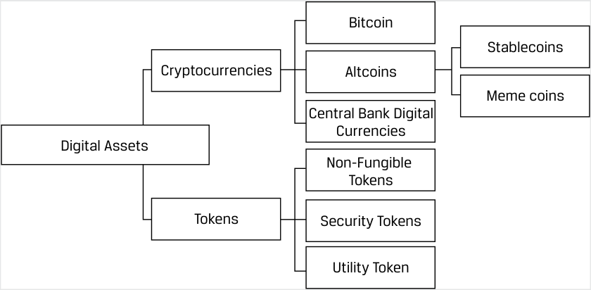
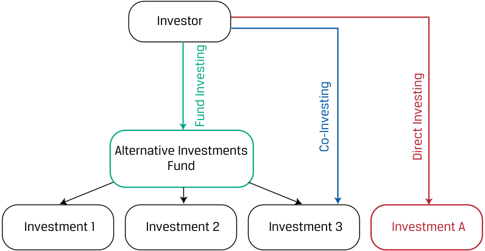
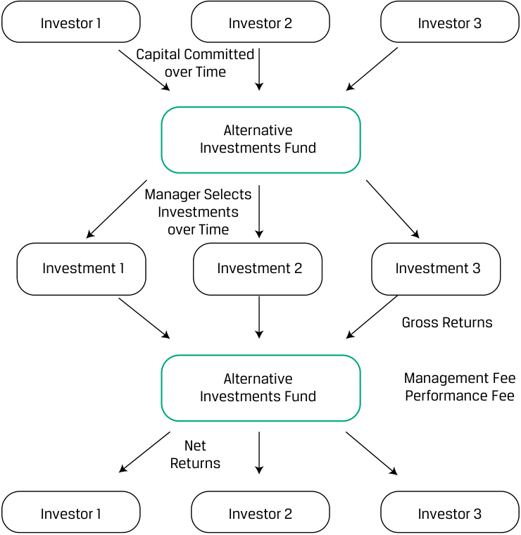
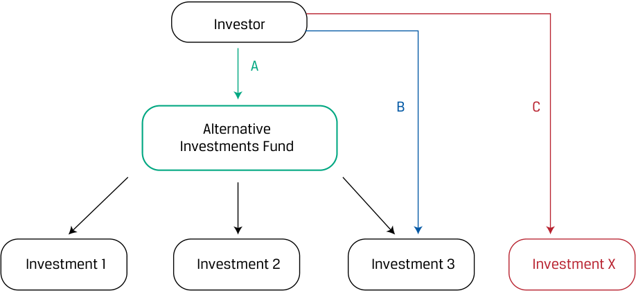
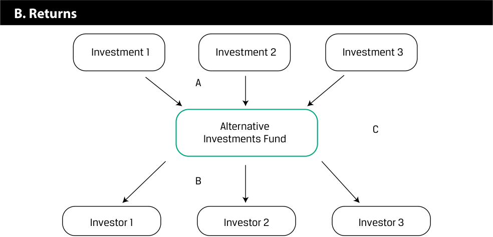
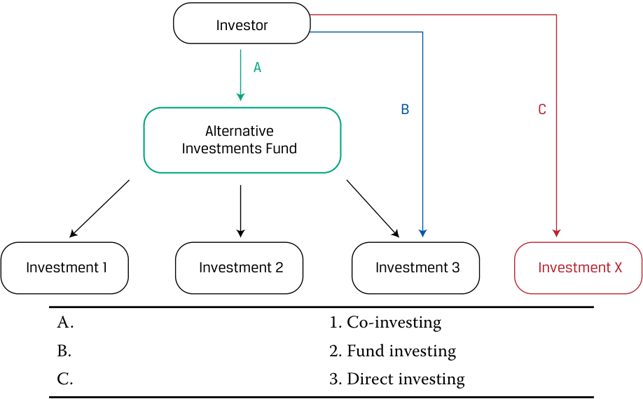

[Toàn Chương] LM01 — Learning Module 1 Alternative Investment Features, Methods, and Structures
Volume 8: Alternative Investments
Learning Module 1 Alternative Investment Features, Methods, and Structures
Part 1/2: Introduction (PDF Pages 11–26)
Tập 8: Đầu tư Thay thế (Volume 8: Alternative Investments)
Học phần 1: Đặc điểm, Phương thức và Cấu trúc Đầu tư Thay thế (Learning Module 1: Alternative Investment Features, Methods, and Structures)
Phần 1/2: Giới thiệu (Introduction) (Trang PDF 11–26)
L E A R N I N G M O D U L E
H Ọ C P H Ầ N (L E A R N I N G M O D U L E)
1
1
Alternative Investment Features, Methods, and Structures
Đặc điểm, Phương thức và Cấu trúc Đầu tư Thay thế (Alternative Investment Features, Methods, and Structures)
LEARNING OUTCOMES
MỤC TIÊU HỌC TẬP (LEARNING OUTCOMES)
Mastery The candidate should be able to:
Làm chủ kiến thức – Ứng viên cần có khả năng:
describe features and categories of alternative investments compare direct investment, co-investment, and fund investment methods for alternative investments describe investment ownership and compensation structures commonly used in alternative investments
- mô tả các đặc điểm và phân loại của đầu tư thay thế (alternative investments)
- so sánh phương thức đầu tư trực tiếp (direct investment), đồng đầu tư (co-investment) và đầu tư qua quỹ (fund investment) đối với các khoản đầu tư thay thế
- mô tả các cấu trúc sở hữu đầu tư và cấu trúc thù lao (ownership and compensation structures) thường được sử dụng trong đầu tư thay thế
INTRODUCTION
GIỚI THIỆU (INTRODUCTION)
1
1
Alternative Investments are grouped together not because they have similar features but instead because they have characteristics distinct from traditional investments. Investing in alternatives can be done through fund investing, co-investing, or direct investing. Alternative investments typically offer investors greater diversification and higher expected returns than traditional investments but often involve longer-term, illiquid investments in less efficient markets. Investing in alternatives requires specialized knowledge. Alternative investments typically rely on more complex and richer compensation structures than traditional investments in order to better align manager and investor incentives over longer periods.
Các khoản đầu tư thay thế (Alternative Investments) được nhóm lại với nhau không phải vì chúng có những đặc điểm tương đồng, mà bởi vì chúng mang những đặc tính khác biệt so với các khoản đầu tư truyền thống (traditional investments). Việc đầu tư vào tài sản thay thế có thể được thực hiện thông qua đầu tư qua quỹ (fund investing), đồng đầu tư (co-investing), hoặc đầu tư trực tiếp (direct investing). Các khoản đầu tư thay thế thường mang lại cho nhà đầu tư mức độ đa dạng hóa lớn hơn và tỷ suất sinh lợi kỳ vọng (expected returns) cao hơn so với các khoản đầu tư truyền thống, nhưng thường liên quan đến các khoản đầu tư dài hạn hơn, kém thanh khoản (illiquid) trong các thị trường kém hiệu quả hơn (less efficient markets). Việc đầu tư vào các tài sản thay thế đòi hỏi kiến thức chuyên môn sâu (specialized knowledge). Đầu tư thay thế thường dựa vào các cấu trúc thù lao phức tạp và hậu hĩnh hơn so với đầu tư truyền thống nhằm gắn kết tốt hơn lợi ích động lực (align incentives) giữa nhà quản lý và nhà đầu tư trong các giai đoạn dài hạn.
LEARNING MODULE OVERVIEW
TỔNG QUAN HỌC PHẦN (LEARNING MODULE OVERVIEW)
-
Alternative investments are investments other than ownership of traditional asset classes (public equity and fixed-income instruments and cash) and include private capital, real assets, and hedge funds.
-
Private capital includes private equity and private debt. Real assets include real estate, infrastructure, and natural resources. Hedge funds may invest across both traditional and alternative asset classes and are distinguished by their investment approach, which often includes leverage, derivatives, or other strategies.
-
Đầu tư thay thế (alternative investments) là các khoản đầu tư ngoài quyền sở hữu đối với các loại tài sản truyền thống (cổ phiếu đại chúng, các công cụ thu nhập cố định và tiền mặt) và bao gồm vốn tư nhân (private capital), tài sản thực (real assets), và quỹ phòng hộ (hedge funds).
-
Vốn tư nhân (private capital) bao gồm vốn cổ phần tư nhân (private equity) và nợ tư nhân (private debt). Tài sản thực (real assets) bao gồm bất động sản (real estate), cơ sở hạ tầng (infrastructure), và tài nguyên thiên nhiên (natural resources). Các quỹ phòng hộ (hedge funds) có thể đầu tư trên cả các loại tài sản truyền thống lẫn tài sản thay thế và được phân biệt bởi phương pháp tiếp cận đầu tư (investment approach) của chúng, vốn thường bao gồm việc sử dụng đòn bẩy (leverage), công cụ phái sinh (derivatives), hoặc các chiến lược khác.
-
Investors often consider alternative investments in pursuit of greater portfolio diversification and/or increased expected returns. In doing so, they usually face longer investment periods, reduced liquidity, and less efficient markets than for more traditional assets.
-
Alternative investment fund investors fully outsource the control and management of investments in exchange for relatively high fees, while co-investment and direct investment methods involve greater investor effort and control over the selection and management of assets in exchange for relatively lower fees.
-
Another common type of alternative investment structure is a limited partnership in which responsibilities are flexibly allocated between investors and managers—with managers as general partners and investors as limited partners. Limited partnerships usually have more complex compensation structures, which include both management and performance fees.
-
Additional alternative investment structures include trusts and limited liability companies.
-
Nhà đầu tư thường cân nhắc các khoản đầu tư thay thế nhằm theo đuổi sự đa dạng hóa danh mục đầu tư lớn hơn và/hoặc gia tăng tỷ suất sinh lợi kỳ vọng. Khi làm như vậy, họ thường phải đối mặt với thời gian đầu tư dài hơn, tính thanh khoản giảm sút, và các thị trường kém hiệu quả hơn so với các tài sản truyền thống.
-
Các nhà đầu tư vào quỹ đầu tư thay thế thuê ngoài (outsource) toàn bộ quyền kiểm soát và quản lý các khoản đầu tư để đổi lấy mức phí tương đối cao, trong khi các phương thức đồng đầu tư (co-investment) và đầu tư trực tiếp (direct investment) đòi hỏi nỗ lực và quyền kiểm soát lớn hơn của nhà đầu tư đối với việc lựa chọn và quản lý tài sản để đổi lấy mức phí tương đối thấp hơn.
-
Một loại cấu trúc đầu tư thay thế phổ biến khác là công ty hợp danh hữu hạn (limited partnership), trong đó trách nhiệm được phân bổ linh hoạt giữa các nhà đầu tư và nhà quản lý—với các nhà quản lý đóng vai trò là thành viên hợp danh (general partners – GP) và các nhà đầu tư đóng vai trò là thành viên góp vốn hữu hạn (limited partners – LP). Các công ty hợp danh hữu hạn thường có cấu trúc thù lao phức tạp hơn, bao gồm cả phí quản lý (management fees) và phí hiệu quả hoạt động (performance fees).
-
Các cấu trúc đầu tư thay thế bổ sung bao gồm quỹ tín thác (trusts) và công ty trách nhiệm hữu hạn (limited liability companies – LLC).
LEARNING MODULE SELF-ASSESSMENT
TỰ ĐÁNH GIÁ HỌC PHẦN (LEARNING MODULE SELF-ASSESSMENT)
- Identify which of the following choices is most likely an alternative investment:
-
A. An investment in a hedge fund focused on traditional assets
-
B. Shares in a manufacturing firm traded on the Bursa Malaysia exchange
-
C. A euro foreign exchange future purchased on the Chicago Mercantile exchange
-
Solution:
- Xác định lựa chọn nào sau đây có khả năng cao nhất là một khoản đầu tư thay thế:
-
A. Khoản đầu tư vào một quỹ phòng hộ (hedge fund) tập trung vào các tài sản truyền thống
-
B. Cổ phiếu của một công ty sản xuất được giao dịch trên sàn giao dịch Bursa Malaysia
-
C. Một hợp đồng tương lai ngoại hối đồng euro được mua trên sàn giao dịch Chicago Mercantile Exchange
-
Lời giải (Solution):
The correct answer is A. An investment in a hedge fund, even one that purchases traditional exchange-traded assets, is considered an alternative investment. B is incorrect because shares traded on a public exchange, such as the Bursa Malaysia exchange, are considered traditional, not alternative, investments. C is incorrect because a euro foreign exchange future purchased on a public exchange, such as the Chicago Mercantile exchange, is considered a traditional, not an alternative, investment.
Đáp án đúng là A. Một khoản đầu tư vào quỹ phòng hộ (hedge fund), ngay cả khi quỹ đó mua các tài sản truyền thống được giao dịch trên sàn, vẫn được coi là một khoản đầu tư thay thế. B sai vì cổ phiếu được giao dịch trên một sàn giao dịch đại chúng, chẳng hạn như sàn Bursa Malaysia, được coi là khoản đầu tư truyền thống chứ không phải đầu tư thay thế. C sai vì hợp đồng tương lai ngoại hối đồng euro được mua trên một sàn giao dịch đại chúng, chẳng hạn như sàn Chicago Mercantile Exchange, được coi là khoản đầu tư truyền thống chứ không phải đầu tư thay thế.
- An advantage of investing in alternative investments most likely is:
-
A. high liquidity.
-
B. low investment fees.
-
C. higher expected returns.
- Một lợi thế của việc đầu tư vào các khoản đầu tư thay thế có khả năng cao nhất là:
-
A. tính thanh khoản cao (high liquidity).
-
B. phí đầu tư thấp (low investment fees).
-
C. tỷ suất sinh lợi kỳ vọng cao hơn (higher expected returns).
Solution:
Lời giải (Solution):
The correct answer is C. Investors are often attracted to alternative investments seeking greater diversification and/or higher expected returns. A is incorrect because investors usually face longer investment periods, reduced liquidity, and less efficient markets with alternative investments than with more traditional assets. B is incorrect because alternative investments often carry higher fees, including performance and/or incentive fees.
Đáp án đúng là C. Các nhà đầu tư thường bị thu hút bởi các khoản đầu tư thay thế khi tìm kiếm sự đa dạng hóa lớn hơn và/hoặc tỷ suất sinh lợi kỳ vọng cao hơn. A sai vì các nhà đầu tư thường phải đối mặt với thời gian đầu tư dài hơn, tính thanh khoản giảm sút, và các thị trường kém hiệu quả hơn khi đầu tư thay thế so với các tài sản truyền thống. B sai vì các khoản đầu tư thay thế thường đi kèm mức phí cao hơn, bao gồm cả phí hiệu quả hoạt động và/hoặc phí khuyến khích (performance and/or incentive fees).
- Investors with limited experience most likely enter into alternative investments through:
-
A. co-investing.
-
B. fund investing.
-
C. direct investing.
-
Solution:
- Các nhà đầu tư có kinh nghiệm hạn chế có khả năng cao nhất sẽ tham gia vào các khoản đầu tư thay thế thông qua:
-
A. đồng đầu tư (co-investing).
-
B. đầu tư qua quỹ (fund investing).
-
C. đầu tư trực tiếp (direct investing).
-
Lời giải (Solution):
The correct answer is B. Investors with limited resources and/or experience generally enter into alternative investments through fund investing, where the investor contributes capital to a fund and the fund identifies, selects, and makes investments on the investor’s behalf. A is incorrect because co-investing is more appropriate for investors who already have some experience investing in funds; in co-investing, the investor invests in assets indirectly through the fund but also possesses rights (known as co-investment rights) to invest directly in the same assets. C is incorrect because direct investing, which occurs when an investor makes a direct investment in an asset without the use of an intermediary, is typically reserved for larger and more sophisticated investors.
Đáp án đúng là B. Các nhà đầu tư có nguồn lực và/hoặc kinh nghiệm hạn chế thường tham gia vào đầu tư thay thế thông qua hình thức đầu tư qua quỹ (fund investing), trong đó nhà đầu tư góp vốn vào một quỹ và quỹ đó sẽ xác định, lựa chọn và thực hiện các khoản đầu tư thay mặt cho nhà đầu tư. A sai vì đồng đầu tư (co-investing) phù hợp hơn với các nhà đầu tư đã có một số kinh nghiệm đầu tư vào các quỹ; trong đồng đầu tư, nhà đầu tư đầu tư vào tài sản một cách gián tiếp thông qua quỹ nhưng cũng sở hữu các quyền (được gọi là quyền đồng đầu tư – co-investment rights) để đầu tư trực tiếp vào cùng các tài sản đó. C sai vì đầu tư trực tiếp (direct investing), diễn ra khi một nhà đầu tư thực hiện khoản đầu tư trực tiếp vào một tài sản mà không sử dụng trung gian, thường chỉ dành cho các nhà đầu tư lớn hơn và am hiểu chuyên sâu hơn (more sophisticated investors).
- When an investor invests in an asset without the use of an intermediary, it is called:
-
A. co-investing.
-
B. fund investing.
-
C. direct investing.
-
Solution:
- Khi một nhà đầu tư đầu tư vào một tài sản mà không thông qua trung gian, phương thức đó được gọi là:
-
A. đồng đầu tư (co-investing).
-
B. đầu tư qua quỹ (fund investing).
-
C. đầu tư trực tiếp (direct investing).
-
Lời giải (Solution):
The correct answer is C. In direct investing, an investor makes a direct investment in an asset without the use of an intermediary. A is incorrect because in co-investing, an investor invests in assets indirectly through a fund but also possesses rights (known as co-investment rights) to invest directly in the same assets. B is incorrect because for fund investing, an investor contributes capital to a fund and the fund, not the investor, identifies, selects, and makes investments on the investor’s behalf.
Đáp án đúng là C. Trong đầu tư trực tiếp (direct investing), một nhà đầu tư thực hiện khoản đầu tư trực tiếp vào một tài sản mà không sử dụng một tổ chức trung gian. A sai vì trong đồng đầu tư (co-investing), một nhà đầu tư đầu tư vào các tài sản một cách gián tiếp thông qua một quỹ nhưng cũng sở hữu các quyền (được gọi là quyền đồng đầu tư – co-investment rights) để đầu tư trực tiếp vào cùng các tài sản đó. B sai vì đối với đầu tư qua quỹ (fund investing), nhà đầu tư góp vốn vào một quỹ và chính quỹ đó, chứ không phải nhà đầu tư, sẽ xác định, lựa chọn và thực hiện các khoản đầu tư thay mặt cho nhà đầu tư.
- Which statement regarding alternative investment partnership structures is most accurate?
-
A. The fund manager has limited liability for anything that goes wrong.
-
B. The fund manager is a limited partner, and investors are general partners.
-
C. Investors’ upfront cash outflow can be a small portion of their total commitment to the partnership.
- Phát biểu nào sau đây liên quan đến cấu trúc hợp danh (partnership structures) trong đầu tư thay thế là chính xác nhất?
-
A. Nhà quản lý quỹ chịu trách nhiệm hữu hạn đối với bất kỳ sai sót hay rủi ro nào xảy ra.
-
B. Nhà quản lý quỹ là thành viên góp vốn hữu hạn (limited partner), và các nhà đầu tư là thành viên hợp danh (general partners).
-
C. Dòng tiền chi ra trả trước (upfront cash outflow) của các nhà đầu tư có thể chỉ chiếm một phần nhỏ trong tổng mức cam kết vốn của họ đối với công ty hợp danh.
Solution:
Lời giải (Solution):
The correct answer is C. Limited partners (LPs) are outside investors who own a fractional interest in the partnership based on the amount of their initial investment and the terms set out in the partnership documentation. LPs commit to future investments, and their upfront cash outflow can be a small portion of their total commitment to the fund. A is incorrect because the fund manager is the fund’s general partner (GP) who runs the business and theoretically bears unlimited liability for anything that goes wrong. B is incorrect because the fund manager is the fund’s general partner, not a limited partner, and the investors are the limited partners.
Đáp án đúng là C. Các thành viên góp vốn hữu hạn (Limited partners – LPs) là các nhà đầu tư bên ngoài sở hữu một phần lợi ích (fractional interest) trong công ty hợp danh dựa trên số tiền đầu tư ban đầu của họ và các điều khoản được quy định trong bộ hồ sơ hợp danh. Các LP cam kết cho các khoản đầu tư trong tương lai, và dòng tiền chi ra trả trước của họ có thể chỉ chiếm một phần nhỏ trong tổng cam kết vốn (total commitment) của họ đối với quỹ. A sai vì nhà quản lý quỹ là thành viên hợp danh (general partner – GP) của quỹ, người điều hành hoạt động kinh doanh và về mặt lý thuyết phải chịu trách nhiệm vô hạn (unlimited liability) đối với bất kỳ điều gì xảy ra sai sót. B sai vì nhà quản lý quỹ là thành viên hợp danh của quỹ, chứ không phải là thành viên góp vốn hữu hạn, và các nhà đầu tư mới là các thành viên góp vốn hữu hạn.
- After failing to meet the hurdle rate, which of the following would a general partner still most likely receive as compensation?
-
A. Carried interest
-
B. Management fee
-
C. Committed capital
- Sau khi không đạt được mức tỷ suất sinh lợi tối thiểu (hurdle rate), khoản nào sau đây mà một thành viên hợp danh (general partner) vẫn có khả năng cao nhất nhận được dưới dạng thù lao?
-
A. Lợi ích phân chia / Phí hiệu quả (Carried interest)
-
B. Phí quản lý (Management fee)
-
C. Vốn cam kết (Committed capital)
Solution:
Lời giải (Solution):
The correct answer is B. Alternative investment funds are usually structured with a management fee typically ranging from 1% to 2% of assets under management (e.g., for hedge funds) or 1% to 2% of committed capital (e.g., for private equity funds). (Committed capital is the total amount of money that the limited partners have committed to the fund’s future investments.) A performance fee (also referred to as an incentive fee, carried interest, or carry) is applied based on excess returns. The partnership agreement usually specifies that the performance fee is earned only after the fund achieves a return known as a “hurdle rate.” The hurdle rate is a minimum rate of return that the general partner must exceed in order to earn the performance fee. A is incorrect because “carried interest” is another name for a performance fee, which is earned only after the fund achieves its hurdle rate. C is incorrect because committed capital is the total amount of money that the limited partners have committed to the fund’s future investments, not a fee to the general partner.
Đáp án đúng là B. Các quỹ đầu tư thay thế thường được cấu trúc với một khoản phí quản lý (management fee) thường dao động từ 1% đến 2% trên tổng tài sản đang quản lý (assets under management – AUM, ví dụ: đối với các quỹ phòng hộ) hoặc 1% đến 2% trên vốn cam kết (committed capital, ví dụ: đối với các quỹ vốn cổ phần tư nhân). (Vốn cam kết là tổng số tiền mà các thành viên góp vốn hữu hạn đã cam kết cho các khoản đầu tư tương lai của quỹ.) Phí hiệu quả hoạt động (performance fee, còn được gọi là phí khuyến khích – incentive fee, lợi ích phân chia – carried interest, hay carry) được áp dụng dựa trên phần tỷ suất sinh lợi vượt trội (excess returns). Thỏa thuận hợp danh thường quy định rằng phí hiệu quả hoạt động chỉ được hưởng sau khi quỹ đạt được một mức tỷ suất sinh lợi được gọi là “tỷ suất sinh lợi tối thiểu” (hurdle rate). Tỷ suất sinh lợi tối thiểu (hurdle rate) là mức tỷ suất sinh lợi tối thiểu mà thành viên hợp danh (GP) phải vượt qua để được hưởng phí hiệu quả hoạt động. A sai vì “lợi ích phân chia” (carried interest) là một tên gọi khác của phí hiệu quả hoạt động, vốn chỉ được hưởng sau khi quỹ đạt được mức tỷ suất sinh lợi tối thiểu (hurdle rate). C sai vì vốn cam kết (committed capital) là tổng số tiền mà các thành viên góp vốn hữu hạn đã cam kết cho các khoản đầu tư tương lai của quỹ, chứ không phải là một khoản phí trả cho thành viên hợp danh.
2
2
ALTERNATIVE INVESTMENT FEATURES
ĐẶC ĐIỂM CỦA ĐẦU TƯ THAY THẾ (ALTERNATIVE INVESTMENT FEATURES)
describe features and categories of alternative investments
mô tả các đặc điểm và phân loại của đầu tư thay thế (alternative investments)
Alternative investments are investments other than ownership of public equity securities, fixed-income instruments, or cash that represent the more traditional asset classes. These investments are referred to as alternatives to traditional asset classes because of their characteristics and the way they are structured. Investors are often attracted to alternative investments when seeking greater diversification and/or higher expected returns in exchange for what are often longer-term, illiquid investments in less efficient markets. The features of these investments necessitate specific skills and information to evaluate their performance and include unique factors investors must consider if adding them to a portfolio.
Đầu tư thay thế (alternative investments) là các khoản đầu tư ngoài quyền sở hữu đối với chứng khoán vốn cổ phần đại chúng, các công cụ thu nhập cố định, hoặc tiền mặt vốn đại diện cho các loại tài sản truyền thống. Các khoản đầu tư này được gọi là các giải pháp thay thế cho các loại tài sản truyền thống bởi đặc tính và cách thức mà chúng được cấu trúc. Nhà đầu tư thường bị thu hút bởi các khoản đầu tư thay thế khi tìm kiếm sự đa dạng hóa lớn hơn và/hoặc tỷ suất sinh lợi kỳ vọng cao hơn để đổi lấy những khoản đầu tư thường mang tính dài hạn hơn, kém thanh khoản trong các thị trường kém hiệu quả hơn. Các đặc điểm của những khoản đầu tư này đòi hỏi các kỹ năng và thông tin chuyên biệt để đánh giá hiệu quả hoạt động của chúng và bao gồm các yếu tố đặc thù mà nhà đầu tư phải cân nhắc nếu bổ sung chúng vào danh mục đầu tư.
Alternative Investments: Features and Categories
Đầu tư Thay thế: Đặc điểm và Phân loại (Alternative Investments: Features and Categories)
Some alternative investment features are shared with traditional public debt and equity securities, while others are significantly different. Features that may distinguish alternative investments include the following:
Một số đặc điểm của đầu tư thay thế có điểm tương đồng với các chứng khoán nợ và vốn cổ phần đại chúng truyền thống, trong khi những đặc điểm khác lại khác biệt đáng kể. Các đặc điểm giúp phân biệt các khoản đầu tư thay thế bao gồm:
-
The need for specialized knowledge to value cash flows and risks
-
Typically low correlation of returns with more traditional asset classes
-
Illiquidity, long investment time horizons, and large capital outlays
-
Nhu cầu về kiến thức chuyên môn sâu (specialized knowledge) để định giá các dòng tiền và rủi ro
-
Tương quan tỷ suất sinh lợi thường thấp (low correlation of returns) với các loại tài sản truyền thống hơn
-
Tính kém thanh khoản (illiquidity), thời hạn đầu tư dài (long investment time horizons), và quy mô vốn chi ra lớn (large capital outlays)
These features lead to the following alternative investment characteristics:
Những đặc điểm này dẫn đến các đặc tính sau của đầu tư thay thế:
- Different investment structures due to the challenges of direct investment
- Các cấu trúc đầu tư khác biệt do những thách thức của việc đầu tư trực tiếp
-
Incentive-based fees to address/minimize information asymmetry between managers and investors
-
Performance appraisal challenges
-
Các khoản phí dựa trên sự khuyến khích (incentive-based fees) nhằm giải quyết/giảm thiểu tình trạng bất cân xứng thông tin (information asymmetry) giữa nhà quản lý và nhà đầu tư
-
Những thách thức trong việc thẩm định hiệu quả hoạt động (performance appraisal challenges)
For example, while many alternative investments have equity or debt characteristics, they often require a larger or longer financial commitment due to an underlying investment’s extended life cycle or different investment methods and vehicles used to align the capabilities and incentives of managers and investors over time. Unlike individual securities, the size and type of some alternative investments may also be prohibitively large for certain investors. For these reasons, most investors limit alternative investments to that portion of their portfolio designated to fund obligations several years in the future. Sophisticated investors with the longest investment time horizons, such as large pension funds, sovereign wealth funds, and not-for-profit endowments, tend to allocate a larger share of their portfolio to these assets.
Ví dụ, mặc dù nhiều khoản đầu tư thay thế có các đặc tính của vốn cổ phần hoặc nợ, chúng thường đòi hỏi sự cam kết tài chính lớn hơn hoặc dài hơn do vòng đời kéo dài của tài sản cơ sở hoặc do các phương thức và công cụ đầu tư khác nhau được sử dụng để gắn kết năng lực và lợi ích động lực của nhà quản lý và nhà đầu tư theo thời gian. Không giống như các chứng khoán riêng lẻ, quy mô và loại hình của một số khoản đầu tư thay thế cũng có thể quá lớn đến mức vượt quá khả năng tham gia (prohibitively large) đối với một số nhà đầu tư nhất định. Vì những lý do này, hầu hết các nhà đầu tư giới hạn các khoản đầu tư thay thế ở phần danh mục đầu tư được chỉ định để tài trợ cho các nghĩa vụ nợ trong nhiều năm tới trong tương lai. Các nhà đầu tư tổ chức am hiểu chuyên sâu có thời hạn đầu tư dài nhất, chẳng hạn như các quỹ hưu trí lớn (large pension funds), quỹ đầu tư quốc gia (sovereign wealth funds), và các quỹ hiến tặng phi lợi nhuận (not-for-profit endowments), có xu hướng phân bổ một tỷ trọng lớn hơn trong danh mục đầu tư của họ vào các tài sản này.
Alternative investment categories include private capital, real assets, and hedge funds.
Các danh mục phân loại đầu tư thay thế bao gồm vốn tư nhân (private capital), tài sản thực (real assets), và quỹ phòng hộ (hedge funds).
Private Capital
Vốn tư nhân (Private Capital)
Private Capital is a broad term for funding provided to companies that is sourced from neither the public equity nor the public debt markets. Capital that is provided in the form of equity investments is called private equity, whereas capital that is provided as a loan or other form of debt is called private debt.
Vốn tư nhân (Private Capital) là một thuật ngữ rộng chỉ nguồn vốn tài trợ được cung cấp cho các công ty không được huy động từ thị trường vốn cổ phần đại chúng hay thị trường nợ đại chúng. Nguồn vốn được cung cấp dưới hình thức đầu tư vốn cổ phần được gọi là vốn cổ phần tư nhân (private equity), trong khi nguồn vốn được cung cấp dưới dạng một khoản vay hoặc hình thức nợ khác được gọi là nợ tư nhân (private debt).
Private equity and private debt are alternative investments with features similar to public equity and public debt. For example, both private and public equity investors are company owners with residual claims to future cash flows and dividends. However, while investors in private equity may have full access to company information and latitude to influence day-to-day management and strategy decisions, investors in publicly traded equity receive only publicly available information, such as annual reports and periodic financial statements, with voting rights limited to decisions requiring shareholder approval.
Vốn cổ phần tư nhân (private equity) và nợ tư nhân (private debt) là các khoản đầu tư thay thế có các đặc điểm tương tự như vốn cổ phần đại chúng và nợ đại chúng. Ví dụ, cả nhà đầu tư vốn cổ phần tư nhân và vốn cổ phần đại chúng đều là chủ sở hữu công ty với quyền truy đòi phần còn lại (residual claims) đối với các dòng tiền và cổ tức trong tương lai. Tuy nhiên, trong khi các nhà đầu tư vào vốn cổ phần tư nhân có thể có toàn quyền tiếp cận thông tin công ty và quyền tự chủ rộng rãi để tác động đến các quyết định quản lý hàng ngày cũng như chiến lược, thì các nhà đầu tư vào cổ phiếu giao dịch đại chúng chỉ nhận được các thông tin công khai sẵn có, chẳng hạn như báo cáo thường niên và báo cáo tài chính định kỳ, với quyền biểu quyết bị giới hạn ở các quyết định đòi hỏi sự chấp thuận của cổ đông.
Private equity refers to investment in privately owned companies or in public companies with the intent to take them private. In general, private equity is used in the mature life cycle stage or for firms in decline ,with leveraged buyouts being a key approach . Private equity managers often use the greater control and flexibility of private versus public ownership to make management and strategy changes, including closing, selling, or reorganizing lines of business to increase profitability over a several-year period. Venture capital is a specialized form of private equity whereby ownership capital is used for non-public companies in the early life cycle or startup phase, where often an idea or business plan exists with a limited operation or customer base.
Vốn cổ phần tư nhân (Private equity) đề cập đến việc đầu tư vào các công ty thuộc sở hữu tư nhân hoặc vào các công ty đại chúng với ý định hủy niêm yết để đưa chúng về thành công ty tư nhân (take them private). Nhìn chung, vốn cổ phần tư nhân được sử dụng trong giai đoạn vòng đời trưởng thành (mature) hoặc cho các công ty đang trong giai đoạn suy thoái (decline), với mua lại bằng đòn bẩy (leveraged buyouts – LBO) là một phương pháp tiếp cận chính. Các nhà quản lý vốn cổ phần tư nhân thường sử dụng quyền kiểm soát lớn hơn và sự linh hoạt của hình thức sở hữu tư nhân so với sở hữu đại chúng để thực hiện các thay đổi về quản lý và chiến lược, bao gồm việc đóng cửa, bán bớt, hoặc tái cấu trúc các mảng kinh doanh nhằm gia tăng khả năng sinh lời trong giai đoạn kéo dài nhiều năm. Vốn đầu tư mạo hiểm (Venture capital – VC) là một hình thức chuyên biệt của vốn cổ phần tư nhân, theo đó vốn chủ sở hữu được sử dụng cho các công ty chưa đại chúng trong giai đoạn vòng đời ban đầu (early) hoặc giai đoạn khởi nghiệp (startup), nơi thường mới chỉ tồn tại một ý tưởng hoặc kế hoạch kinh doanh với quy mô hoạt động hoặc tệp khách hàng còn hạn chế.
EXAMPLE 1
VÍ DỤ 1 (EXAMPLE 1)
Venture Capital vs. Private Equity
Vốn đầu tư mạo hiểm so với Vốn cổ phần tư nhân (Venture Capital vs. Private Equity)
Heartfield Digital is an early-stage digital media venture established 18 months ago. Heartfield plans to convert conventional music and art collection rights to digital form for sale and distribution. Its founders are seeking early-stage investors in order to conduct market research, build partnerships, and initiate operations.
Heartfield Digital là một doanh nghiệp truyền thông kỹ thuật số ở giai đoạn đầu (early-stage) được thành lập cách đây 18 tháng. Heartfield có kế hoạch chuyển đổi các quyền bộ sưu tập âm nhạc và nghệ thuật truyền thống sang định dạng kỹ thuật số để bán và phân phối. Các nhà sáng lập của công ty đang tìm kiếm các nhà đầu tư giai đoạn đầu để tiến hành nghiên cứu thị trường, xây dựng quan hệ đối tác và bắt đầu hoạt động.
In contrast, Arguston Inc. is a mid-sized manufacturing firm in a mature industry that is experiencing a decline in profitability. Arguston’s share price has stagnated, and given its high-cost structure and dwindling operating cash flow, Arguston lacks the scale to make necessary technological upgrades to maintain competitiveness. A prospective private equity investor might consider an
Ngược lại, Arguston Inc. là một công ty sản xuất quy mô vừa trong một ngành công nghiệp đã trưởng thành đang trải qua sự sụt giảm về khả năng sinh lời. Giá cổ phiếu của Arguston đã đình trệ, và với cấu trúc chi phí cao cùng dòng tiền hoạt động ngày càng suy giảm, Arguston thiếu quy mô để thực hiện các nâng cấp công nghệ cần thiết nhằm duy trì khả năng cạnh tranh. Một nhà đầu tư vốn cổ phần tư nhân (private equity) tiềm năng có thể cân nhắc một
investment plan to restructure Arguston’s operations, acquire a smaller competitor, and/or create efficiencies, perhaps by updating the plant and equipment. In several years, Arguston may emerge as a more profitable independent company or as an attractive acquisition target for a competitor.
kế hoạch đầu tư nhằm tái cấu trúc các hoạt động của Arguston, mua lại một đối thủ cạnh tranh nhỏ hơn, và/hoặc tạo ra hiệu quả hoạt động, có thể bằng cách nâng cấp nhà máy và thiết bị. Trong vài năm tới, Arguston có thể nổi lên như một công ty độc lập có khả năng sinh lời cao hơn hoặc trở thành một mục tiêu mua lại hấp dẫn đối với một đối thủ cạnh tranh.
Technically, venture capital (VC) is a form of private equity. The main difference is that while private equity investors prefer stable companies, VC investors usually come in during the startup phase. Venture capital is usually given to small companies with huge growth potential, such as Heartfield Digital, while broader types of private equity financing would be more appropriate for a mature firm, such as Arguston.
Về mặt kỹ thuật, vốn đầu tư mạo hiểm (venture capital – VC) là một hình thức của vốn cổ phần tư nhân (private equity). Sự khác biệt chính là trong khi các nhà đầu tư vốn cổ phần tư nhân ưa thích các công ty ổn định, thì các nhà đầu tư VC thường tham gia vào giai đoạn khởi nghiệp (startup phase). Vốn đầu tư mạo hiểm thường được cấp cho các công ty nhỏ có tiềm năng tăng trưởng khổng lồ, chẳng hạn như Heartfield Digital, trong khi các loại hình tài trợ vốn cổ phần tư nhân rộng hơn sẽ phù hợp hơn cho một công ty đã trưởng thành, chẳng hạn như Arguston.
For private debt , in addition to private loans or bonds, venture debt is extended to early-stage firms with little or no cash flow, while distressed debt (introduced in a separate fixed-income lesson) involves public or private debt of corporate issuers believed to be close to or in bankruptcy that could benefit from investors with capital restructuring skills.
Đối với nợ tư nhân (private debt), ngoài các khoản vay tư nhân hoặc trái phiếu tư nhân, nợ mạo hiểm (venture debt) được cấp cho các công ty ở giai đoạn đầu có ít hoặc chưa có dòng tiền, trong khi nợ xấu / nợ của doanh nghiệp gặp khó khăn tài chính (distressed debt – được giới thiệu trong một bài học riêng về thu nhập cố định) liên quan đến các khoản nợ đại chúng hoặc nợ tư nhân của các tổ chức phát hành doanh nghiệp được cho là đang tiến gần đến hoặc đang trong tình trạng phá sản, những đơn vị có thể hưởng lợi từ các nhà đầu tư có kỹ năng tái cấu trúc vốn (capital restructuring skills).
Real Assets
Tài sản thực (Real Assets)
In contrast to financial assets, real assets generally are tangible physical assets, such as real estate (for example, land or buildings) and natural resources, but also include such intangibles as patents, intellectual property, and goodwill. Real assets either generate current or expected future cash flows and/or are considered a store of value. Real estate includes borrowed or ownership capital in buildings or land. Developed land includes commercial and industrial real estate, residential real estate, and infrastructure. Commercial real estate includes land and buildings where private business activity is the primary cash flow source, whereas residential real estate’s cash flows stem from rents or mortgage payments by households. Publicly traded forms of real estate include real estate investment trusts (REITS), which are issuers of equity securities, and mortgage-backed debt securities, which are introduced and discussed in a fixed-income lesson.
Trái ngược với các tài sản tài chính (financial assets), tài sản thực (real assets) nhìn chung là các tài sản vật chất hữu hình (tangible physical assets), chẳng hạn như bất động sản (ví dụ: đất đai hoặc tòa nhà) và tài nguyên thiên nhiên, nhưng cũng bao gồm các tài sản vô hình (intangibles) như bằng sáng chế (patents), tài sản trí tuệ (intellectual property), và lợi thế thương mại (goodwill). Tài sản thực hoặc tạo ra các dòng tiền hiện tại hay kỳ vọng trong tương lai và/hoặc được coi là một phương tiện lưu giữ giá trị (store of value). Bất động sản (Real estate) bao gồm vốn vay hoặc vốn chủ sở hữu trong các tòa nhà hoặc đất đai. Đất đã phát triển (developed land) bao gồm bất động sản thương mại và công nghiệp, bất động sản nhà ở, và cơ sở hạ tầng. Bất động sản thương mại (commercial real estate) bao gồm đất đai và các tòa nhà nơi hoạt động kinh doanh tư nhân là nguồn tạo ra dòng tiền chính, trong khi dòng tiền của bất động sản nhà ở (residential real estate) bắt nguồn từ tiền thuê nhà hoặc các khoản thanh toán thế chấp của các hộ gia đình. Các hình thức bất động sản được giao dịch đại chúng bao gồm các quỹ tín thác đầu tư bất động sản (real estate investment trusts – REITs), vốn là các tổ chức phát hành chứng khoán vốn cổ phần, và các chứng khoán nợ đảm bảo bằng thế chấp (mortgage-backed debt securities – MBS), được giới thiệu và thảo luận trong một bài học về thu nhập cố định.
Infrastructure is a special type of real asset that typically involves land, buildings and other long-lived fixed assets that are intended for public use and provide essential services. Bridges and toll roads are common examples of tangible infrastructure assets. Infrastructure may be developed either solely by governments or through a public–private partnership (PPP) in which private investors also have a stake. For example, a public–private partnership might be used in order to attract long-term private investment for a broadband internet investment. Infrastructure assets create cash flows either directly in the form of fees, leases, or other compensation for access rights or indirectly by promoting economic growth and supporting a government’s ability to generate increased tax revenue on future economic activity. When private investors are involved, a contract known as a concession agreement usually governs the investor’s obligations to construct and maintain infrastructure as well as the exclusive right to operate and earn fees for a pre-determined period.
Cơ sở hạ tầng (Infrastructure) là một loại tài sản thực đặc biệt thường liên quan đến đất đai, tòa nhà và các tài sản cố định có thời gian sử dụng lâu dài khác được dành cho mục đích sử dụng công cộng và cung cấp các dịch vụ thiết yếu. Cầu cống và đường thu phí là những ví dụ phổ biến về tài sản cơ sở hạ tầng hữu hình. Cơ sở hạ tầng có thể được phát triển chỉ bởi chính phủ hoặc thông qua quan hệ đối tác công – tư (public–private partnership – PPP), trong đó các nhà đầu tư tư nhân cũng có phần vốn góp. Ví dụ, một quan hệ đối tác công – tư có thể được sử dụng nhằm thu hút vốn đầu tư tư nhân dài hạn cho một dự án đầu tư internet băng thông rộng. Các tài sản cơ sở hạ tầng tạo ra dòng tiền hoặc trực tiếp dưới hình thức phí, tiền cho thuê, hay các khoản đền bù khác cho quyền tiếp cận sử dụng, hoặc gián tiếp bằng cách thúc đẩy tăng trưởng kinh tế và hỗ trợ khả năng của chính phủ trong việc tạo ra nguồn thu thuế gia tăng từ các hoạt động kinh tế trong tương lai. Khi có sự tham gia của các nhà đầu tư tư nhân, một hợp đồng được gọi là thỏa thuận nhượng quyền (concession agreement) thường chi phối các nghĩa vụ của nhà đầu tư trong việc xây dựng và bảo trì cơ sở hạ tầng cũng như quyền độc quyền vận hành và thu phí trong một khoảng thời gian được xác định trước.
EXAMPLE 2
VÍ DỤ 2 (EXAMPLE 2)
Public–Private Partnership for Infrastructure Projects in Indonesia
Quan hệ Đối tác Công – Tư cho các Dự án Cơ sở hạ tầng tại Indonesia (Public–Private Partnership for Infrastructure Projects in Indonesia)
PT Indonesia Infrastructure Finance (IIF) is a private national company established in 2010 by the government of Indonesia to accelerate and improve private participation in infrastructure development in Indonesia. Together with the World Bank, the Asian Development Bank, and other institutions, the IIF
PT Indonesia Infrastructure Finance (IIF) là một công ty quốc gia tư nhân được Chính phủ Indonesia thành lập vào năm 2010 nhằm thúc đẩy và cải thiện sự tham gia của khu vực tư nhân vào việc phát triển cơ sở hạ tầng tại Indonesia. Cùng với Ngân hàng Thế giới (World Bank), Ngân hàng Phát triển Châu Á (ADB), và các định chế khác, IIF
provides infrastructure financing and advisory services for commercially viable infrastructure projects. This approach has facilitated development of PPP projects, increased equity investment in Indonesian infrastructure projects, and increased institutional awareness and capacity to implement environmental, health, and safety and social issues. Looking ahead, the IIF anticipates the need to spend USD150 billion over a five-year period to construct power plants and toll roads. While the government will be able to fund 30% of this cost, the remainder will be financed by the private sector through PPPs.
cung cấp dịch vụ tài trợ cơ sở hạ tầng và tư vấn cho các dự án cơ sở hạ tầng có tính khả thi về mặt thương mại. Phương pháp tiếp cận này đã tạo điều kiện thuận lợi cho việc phát triển các dự án PPP, gia tăng đầu tư vốn cổ phần vào các dự án cơ sở hạ tầng của Indonesia, đồng thời nâng cao nhận thức và năng lực của các định chế trong việc thực thi các vấn đề về môi trường, sức khỏe, an toàn và xã hội. Nhìn về phía trước, IIF dự kiến nhu cầu chi tiêu 150 tỷ USD trong giai đoạn 5 năm để xây dựng các nhà máy điện và đường thu phí. Trong khi chính phủ sẽ có thể tài trợ 30% chi phí này, phần còn lại sẽ được tài trợ bởi khu vực tư nhân thông qua các dự án PPP.
Natural resources involve either less developed land, which itself is the source of economic value, or naturally occurring standardized products that are harvested, extracted, and/or refined. Less developed land includes farmland, timberland, or land for exploration for natural resource deposits, such as minerals or energy. Sources of return for these types of less developed land include expected price appreciation over time and cash flows. For example, farmland generates crop yields or agricultural lease payments, future timber harvests generate timberland income, and mineral or drilling rights to extract and refine natural resources can provide income. In some cases, these investments may be considered for environmental, social, and governance (ESG) purposes—for example, when promoting sustainable farming practices for agriculture or creating carbon offsets for timberland, as in the following example.
Tài nguyên thiên nhiên (Natural resources) liên quan đến hoặc là đất ít phát triển hơn (less developed land), bản thân mảnh đất đó là nguồn tạo ra giá trị kinh tế, hoặc là các sản phẩm tiêu chuẩn hóa có sẵn trong tự nhiên được thu hoạch, khai thác, và/hoặc tinh chế. Đất ít phát triển bao gồm đất nông nghiệp (farmland), đất lâm nghiệp (timberland), hoặc đất dành cho việc thăm dò các mỏ tài nguyên thiên nhiên, chẳng hạn như khoáng sản hoặc năng lượng. Các nguồn tỷ suất sinh lợi đối với những loại đất ít phát triển này bao gồm sự tăng giá kỳ vọng (expected price appreciation) theo thời gian và các dòng tiền. Ví dụ, đất nông nghiệp tạo ra sản lượng cây trồng hoặc các khoản thanh toán tiền thuê đất nông nghiệp, việc thu hoạch gỗ trong tương lai tạo ra thu nhập từ đất lâm nghiệp, và quyền khai thác khoáng sản hoặc khoan thăm dò để khai thác và tinh chế tài nguyên thiên nhiên có thể mang lại thu nhập. Trong một số trường hợp, các khoản đầu tư này có thể được xem xét cho các mục đích môi trường, xã hội và quản trị (ESG)—ví dụ, khi thúc đẩy các phương pháp canh tác bền vững trong nông nghiệp hoặc tạo ra các tín chỉ bù đắp carbon (carbon offsets) đối với đất lâm nghiệp, như trong ví dụ dưới đây.
EXAMPLE 3
VÍ DỤ 3 (EXAMPLE 3)
Using Timberland to Create Carbon Offsets
Sử dụng Đất lâm nghiệp để Tạo ra Tín chỉ Bù đắp Carbon (Using Timberland to Create Carbon Offsets)
Companies eager to offset emissions are paying timberland owners not to cut acres of trees. Growing trees absorb carbon in the atmosphere.
Các công ty mong muốn bù đắp lượng khí thải đang trả tiền cho những người chủ sở hữu đất lâm nghiệp để họ không đốn hạ hàng mẫu Anh rừng cây. Cây cối đang phát triển sẽ hấp thụ lượng carbon trong bầu khí quyển.
-
Companies that pay timber owners not to harvest trees receive credits in the form of carbon offsets. Large companies, which inevitably generate emissions in the course of doing business, can fund carbon offsets to demonstrate to their investors, customers, and others (including regulators) that they are serious about reducing pollution and helping the environment.
-
For large and small owners of timberland, choosing not to harvest makes sense, too. Their trees continue to grow, leading to higher future volumes of timber, and they earn non-timber income in the meantime.
-
Các công ty trả tiền cho chủ rừng để không thu hoạch gỗ sẽ nhận được các tín chỉ dưới hình thức bù đắp carbon (carbon offsets). Các công ty lớn, vốn không thể tránh khỏi việc tạo ra khí thải trong quá trình hoạt động kinh doanh, có thể tài trợ cho các khoản bù đắp carbon để chứng minh với các nhà đầu tư, khách hàng và các bên khác (bao gồm cả cơ quan quản lý) rằng họ thực sự nghiêm túc trong việc giảm thiểu ô nhiễm và bảo vệ môi trường.
-
Đối với các chủ sở hữu đất lâm nghiệp lớn và nhỏ, việc lựa chọn không thu hoạch cũng rất hợp lý. Cây cối của họ tiếp tục phát triển, dẫn đến trữ lượng gỗ trong tương lai cao hơn, và trong thời gian chờ đợi đó họ vẫn kiếm được thu nhập ngoài gỗ (non-timber income).
In other cases, undeveloped land may also have future potential for commercial, residential, or infrastructure development.
Trong các trường hợp khác, đất chưa phát triển cũng có thể có tiềm năng trong tương lai để phát triển thương mại, nhà ở, hoặc cơ sở hạ tầng.
Standardized, traded goods known as commodities include plant, animal, energy, and mineral products used in goods and services production. Commodities do not themselves generate cash flows but, rather, are ultimately sold by commodity producers to commodity consumers for economic use. Investors seek to benefit from commodity price changes based on their future economic use as well as a lower correlation of returns versus other asset classes over the economic cycle. With their lower correlation of returns with other asset classes, commodities also can serve as a countercyclical holding and as an inflation hedge.
Các hàng hóa được tiêu chuẩn hóa và giao dịch trên thị trường được gọi là hàng hóa thương phẩm (commodities) bao gồm các sản phẩm thực vật, động vật, năng lượng và khoáng sản được sử dụng trong sản xuất hàng hóa và dịch vụ. Bản thân hàng hóa thương phẩm không tự tạo ra dòng tiền mà thay vào đó, cuối cùng sẽ được những người sản xuất hàng hóa bán cho những người tiêu dùng hàng hóa để sử dụng cho mục đích kinh tế. Các nhà đầu tư tìm cách hưởng lợi từ những biến động giá hàng hóa dựa trên giá trị sử dụng kinh tế trong tương lai của chúng cũng như mức tương quan tỷ suất sinh lợi thấp hơn so với các loại tài sản khác qua chu kỳ kinh tế. Với mức tương quan tỷ suất sinh lợi thấp hơn so với các loại tài sản khác, hàng hóa thương phẩm cũng có thể đóng vai trò là một khoản nắm giữ ngược chu kỳ (countercyclical holding) và là một công cụ phòng vệ lạm phát (inflation hedge).
EXAMPLE 4
VÍ DỤ 4 (EXAMPLE 4)
Rising Demand for Lithium, an Increasingly Important Commodity
Nhu cầu Gia tăng đối với Lithium, một Hàng hóa Thương phẩm Ngày càng Quan trọng (Rising Demand for Lithium, an Increasingly Important Commodity)
Demand for lithium is growing rapidly as demand for electric vehicles (EVs) climbs. Lithium is popular with battery manufacturers because, as the least dense metal, it stores a large proportion of energy relative to its weight.
Nhu cầu đối với lithium đang tăng trưởng nhanh chóng khi nhu cầu về xe điện (electric vehicles – EVs) leo thang. Lithium được các nhà sản xuất pin ưa chuộng bởi vì, là kim loại có tỷ trọng nhẹ nhất, nó lưu trữ được một tỷ lệ năng lượng lớn so với trọng lượng của mình.
The sales of battery electric and plug-in hybrid electric cars exceeded 2 million for the first time in 2019. China dominates this market, accounting for more than half of all current EV sales worldwide. An industry source has forecast that EV sales will grow from 2.5 million in 2020 to approximately 11 million in 2025 and will exceed 30 million by 2030, garnering approximately 32% of the total market share for new car sales at that time.
Doanh số bán xe ô tô điện chạy pin (battery electric) và xe điện lai sạc điện (plug-in hybrid electric) đã vượt mốc 2 triệu chiếc lần đầu tiên vào năm 2019. Trung Quốc thống trị thị trường này, chiếm hơn một nửa tổng doanh số bán xe điện hiện tại trên toàn thế giới. Một nguồn tin trong ngành đã dự báo rằng doanh số bán xe điện sẽ tăng từ 2,5 triệu chiếc vào năm 2020 lên khoảng 11 triệu chiếc vào năm 2025 và sẽ vượt quá 30 triệu chiếc vào năm 2030, giành được khoảng 32% tổng thị phần doanh số bán xe ô tô mới vào thời điểm đó.
Demand for lithium will rise accordingly. The growth in lithium demand is expected to foster new lithium mining and more production in more countries worldwide.
Nhu cầu đối với lithium sẽ tăng lên tương ứng. Sự tăng trưởng trong nhu cầu lithium được kỳ vọng sẽ thúc đẩy hoạt động khai thác mỏ lithium mới và gia tăng sản xuất tại nhiều quốc gia hơn trên toàn thế giới.
Other real alternative assets include tangible collectible assets, such as fine art, wine, rare coins, watches, and other rare assets, as well as intangible assets, such as patents, and litigation, and so-called digital assets . “Digital assets” is the umbrella term covering assets that can be created, stored, and transmitted electronically and have associated ownership or use rights.
Các tài sản thay thế thực khác bao gồm các tài sản sưu tầm hữu hình (tangible collectible assets), chẳng hạn như tác phẩm mỹ thuật (fine art), rượu vang, tiền xu quý hiếm, đồng hồ, và các tài sản quý hiếm khác, cũng như các tài sản vô hình (intangible assets), chẳng hạn như bằng sáng chế (patents), quyền kiện tụng (litigation), và cái gọi là tài sản kỹ thuật số (digital assets). “Tài sản kỹ thuật số” là thuật ngữ bao trùm cho các tài sản có thể được tạo ra, lưu trữ và truyền tải bằng phương thức điện tử và có các quyền sở hữu hoặc quyền sử dụng gắn kèm.
DIGITAL ASSETS
TÀI SẢN KỸ THUẬT SỐ (DIGITAL ASSETS)
The term “digital assets” covers a wide variety of assets, such as cryptocurrencies, tokens (security and utility), and digital collectables (such as digital art). The following diagram provides a simple breakdown of digital assets.
Thuật ngữ “tài sản kỹ thuật số” (digital assets) bao gồm rất nhiều loại tài sản khác nhau, chẳng hạn như tiền mã hóa (cryptocurrencies), mã thông báo (tokens – bao gồm token chứng khoán và token tiện ích), và các vật phẩm sưu tầm kỹ thuật số (digital collectables, chẳng hạn như nghệ thuật kỹ thuật số). Sơ đồ dưới đây cung cấp một sự phân chia đơn giản về các tài sản kỹ thuật số.
Digital Assets diagram
Sơ đồ Tài sản Kỹ thuật số (Digital Assets diagram)

Chú thích hình ảnh: Tài sản kỹ thuật số (Digital Assets) được chia thành hai nhánh chính: - Tiền mã hóa (Cryptocurrencies): Bao gồm Bitcoin, Tiền mã hóa ổn định (Stablecoins), Altcoins (trong đó có Meme coins), và Tiền kỹ thuật số của Ngân hàng Trung ương (Central Bank Digital Currencies – CBDC). - Mã thông báo (Tokens): Bao gồm Token không thể thay thế (Non-Fungible Tokens – NFT), Token chứng khoán (Security Tokens), và Token tiện ích (Utility Token).
Cryptocurrency and tokens utilize cryptography, an advanced encryption technique that assures the authenticity of crypto assets. The key difference between these two classes of digital asset is that cryptocurrencies have their own blockchains, whereas crypto tokens are built on an existing blockchain.
Tiền mã hóa (cryptocurrency) và các mã thông báo (tokens) sử dụng mật mã học (cryptography), một kỹ thuật mã hóa tiên tiến giúp đảm bảo tính xác thực của các tài sản mã hóa (crypto assets). Sự khác biệt chính giữa hai phân lớp tài sản kỹ thuật số này là tiền mã hóa có chuỗi khối (blockchains) riêng của chúng, trong khi các mã thông báo tiền mã hóa (crypto tokens) được xây dựng trên một chuỗi khối hiện có.
For example, cryptocurrencies are the native asset of a blockchain—such as Bitcoin (BTC) or Ethereum (ETH). However, tokens are created as part of a platform that is built on an existing blockchain, such as the many ERC-20 tokens that make up the Ethereum ecosystem. The Ethereum ecosystem is used as a network for decentralized applications, such as non-fungible token (NFT) marketplaces and decentralized finance (DeFi) projects.
Ví dụ, tiền mã hóa là tài sản gốc (native asset) của một chuỗi khối—chẳng hạn như Bitcoin (BTC) hoặc Ethereum (ETH). Tuy nhiên, các mã thông báo (tokens) được tạo ra như một phần của một nền tảng được xây dựng trên một chuỗi khối hiện có, chẳng hạn như rất nhiều mã thông báo chuẩn ERC-20 cấu thành nên hệ sinh thái Ethereum. Hệ sinh thái Ethereum được sử dụng làm mạng lưới cho các ứng dụng phi tập trung (decentralized applications – dApps), chẳng hạn như các sàn giao dịch mã thông báo không thể thay thế (NFT) và các dự án tài chính phi tập trung (decentralized finance – DeFi).
Digital assets are covered in more detail in a subsequent alternative investments learning module.
Tài sản kỹ thuật số sẽ được trình bày chi tiết hơn trong một học phần đầu tư thay thế tiếp theo.
Hedge Funds
Quỹ phòng hộ (Hedge Funds)
Hedge funds are private investment vehicles that may invest in public equities or publicly traded fixed-income assets, private capital, and/or real assets, but they are distinguished by their investment approach rather than by the investments themselves. Hedge funds make frequent use of leverage, derivatives, short selling, and other investment strategies, which often results in a substantially different risk and return profile from that of merely buying and holding the underlying assets in an investment portfolio. Investors may also invest in a portfolio of hedge funds, often referred to as a fund of funds .
Quỹ phòng hộ (Hedge funds) là các phương tiện đầu tư tư nhân có thể đầu tư vào cổ phiếu đại chúng hoặc tài sản thu nhập cố định giao dịch đại chúng, vốn tư nhân, và/hoặc tài sản thực, nhưng chúng được phân biệt bởi phương pháp tiếp cận (approach) đầu tư hơn là bởi chính bản thân các tài sản đầu tư. Các quỹ phòng hộ thường xuyên sử dụng đòn bẩy (leverage), công cụ phái sinh (derivatives), bán khống (short selling), và các chiến lược đầu tư khác, điều này thường dẫn đến một hồ sơ rủi ro và tỷ suất sinh lợi (risk and return profile) khác biệt đáng kể so với việc chỉ đơn thuần mua và nắm giữ các tài sản cơ sở trong một danh mục đầu tư. Nhà đầu tư cũng có thể đầu tư vào một danh mục gồm nhiều quỹ phòng hộ, thường được gọi là quỹ của các quỹ (fund of funds).
QUESTION SET
BỘ CÂU HỎI (QUESTION SET)
- Tangible physical assets that generate current or expected future cash flows and/or are considered a store of value are best labeled as:
-
A. real assets.
-
B. private equity.
-
C. venture capital.
- Các tài sản vật chất hữu hình tạo ra các dòng tiền hiện tại hoặc kỳ vọng trong tương lai và/hoặc được coi là một phương tiện lưu giữ giá trị được gọi đúng nhất là:
-
A. tài sản thực (real assets).
-
B. vốn cổ phần tư nhân (private equity).
-
C. vốn đầu tư mạo hiểm (venture capital).
Solution:
Lời giải (Solution):
The correct answer is A. In contrast to financial assets, real assets are generally tangible physical assets that generate current or expected future cash flows and/or are considered a store of value. Major categories of real assets include real estate and natural resources, as well as intangibles such as patents. B is incorrect because private equity, considered an alternative investment, is non-publicly traded capital that is invested directly in private companies (or in public companies that are being taken private). It is typically used to invest in firms in the mature life-cycle stage or in decline. C is incorrect because venture capital is ownership capital used for non-public companies in their early life cycle or startup phase.
Đáp án đúng là A. Trái ngược với tài sản tài chính, tài sản thực (real assets) nhìn chung là các tài sản vật chất hữu hình tạo ra dòng tiền hiện tại hoặc kỳ vọng trong tương lai và/hoặc được coi là một phương tiện lưu giữ giá trị. Các danh mục chính của tài sản thực bao gồm bất động sản và tài nguyên thiên nhiên, cũng như các tài sản vô hình như bằng sáng chế. B sai vì vốn cổ phần tư nhân (private equity), được coi là một khoản đầu tư thay thế, là nguồn vốn không giao dịch đại chúng được đầu tư trực tiếp vào các công ty tư nhân (hoặc vào các công ty đại chúng đang được mua lại để đưa về tư nhân). Nó thường được sử dụng để đầu tư vào các công ty ở giai đoạn vòng đời trưởng thành hoặc đang suy thoái. C sai vì vốn đầu tư mạo hiểm (venture capital) là vốn chủ sở hữu được sử dụng cho các công ty chưa đại chúng trong giai đoạn vòng đời ban đầu hoặc giai đoạn khởi nghiệp của chúng.
- Contrast private equity and venture capital.
- Hãy đối chiếu sự khác biệt giữa vốn cổ phần tư nhân (private equity) và vốn đầu tư mạo hiểm (venture capital).
Solution:
Lời giải (Solution):
Private capital is used at different times in a company’s life cycle and in different forms. Most private equity is used in the mature life cycle stage or for firms in decline. Private equity managers often use the greater control and flexibility of private versus public ownership to make management and strategy changes including closing, selling, or reorganizing lines of business to increase profitability over a several-year period. In contrast, venture capital is used for non-public companies with high growth potential in their early life cycle or startup phase. Venture capital is essentially a specialized form of private equity; it represents a small portion of the entire private equity market by value.
Vốn tư nhân (private capital) được sử dụng ở các thời điểm khác nhau trong vòng đời của một công ty và dưới các hình thức khác nhau. Hầu hết vốn cổ phần tư nhân (private equity) được sử dụng trong giai đoạn vòng đời trưởng thành (mature) hoặc cho các công ty đang suy thoái (in decline). Các nhà quản lý vốn cổ phần tư nhân thường sử dụng quyền kiểm soát lớn hơn và sự linh hoạt của hình thức sở hữu tư nhân so với sở hữu đại chúng để thực hiện các thay đổi về quản lý và chiến lược, bao gồm việc đóng cửa, bán bớt, hoặc tái cấu trúc các mảng kinh doanh nhằm gia tăng khả năng sinh lời trong giai đoạn kéo dài nhiều năm. Ngược lại, vốn đầu tư mạo hiểm (venture capital) được sử dụng cho các công ty chưa đại chúng có tiềm năng tăng trưởng cao trong giai đoạn vòng đời ban đầu hoặc giai đoạn khởi nghiệp (startup phase). Vốn đầu tư mạo hiểm về bản chất là một hình thức chuyên biệt của vốn cổ phần tư nhân; nó chiếm một phần nhỏ trong toàn bộ thị trường vốn cổ phần tư nhân xét theo giá trị.
- Identify which statement about a digital asset is most accurate. A digital asset:
- A. includes digital art but not cryptocurrencies.
- Xác định phát biểu nào sau đây về tài sản kỹ thuật số (digital asset) là chính xác nhất. Một tài sản kỹ thuật số:
- A. bao gồm nghệ thuật kỹ thuật số (digital art) nhưng không bao gồm tiền mã hóa (cryptocurrencies).
-
B. is anything that can be stored and transmitted electronically and has associated ownership or use rights.
-
C. must adhere to very specific designs or requirements in order to work within the limited types of technology that support it.
-
Solution:
-
B. là bất cứ thứ gì có thể được lưu trữ và truyền tải bằng phương thức điện tử và có các quyền sở hữu hoặc quyền sử dụng gắn kèm.
-
C. phải tuân thủ các thiết kế hoặc yêu cầu hết sức cụ thể để có thể hoạt động trong phạm vi các loại công nghệ hạn chế hỗ trợ nó.
-
Lời giải (Solution):
The correct answer is B. Digital assets continue to evolve and vary in terms of design and application. Digital assets can be thought of as anything that can be stored and transmitted electronically and has associated ownership or use rights. A is incorrect because digital assets include cryptocurrencies, tokens (security and utility), and digital collectables (such as digital art). C is incorrect because digital assets may take many forms (such as digital tokens and virtual currencies) and may use various underlying technologies. They are not limited to specific designs or technology.
Đáp án đúng là B. Tài sản kỹ thuật số tiếp tục phát triển và đa dạng về mặt thiết kế cũng như ứng dụng. Tài sản kỹ thuật số có thể được hiểu là bất cứ thứ gì có thể được lưu trữ và truyền tải bằng phương thức điện tử và có các quyền sở hữu hoặc quyền sử dụng gắn kèm. A sai vì tài sản kỹ thuật số bao gồm tiền mã hóa (cryptocurrencies), mã thông báo (tokens – chứng khoán và tiện ích), và các vật phẩm sưu tầm kỹ thuật số (chẳng hạn như nghệ thuật kỹ thuật số). C sai vì tài sản kỹ thuật số có thể mang nhiều hình thức (chẳng hạn như mã thông báo kỹ thuật số và tiền ảo) và có thể sử dụng nhiều công nghệ nền tảng khác nhau. Chúng không bị giới hạn ở các thiết kế hoặc công nghệ cụ thể nào.
- Determine the correct answers to fill in the blanks: Alternative investment categories include __, _________________, and ______________. Solution: Alternative investment categories include private capital , real assets , and hedge funds_ .
- Xác định các câu trả lời đúng để điền vào chỗ trống: Các danh mục phân loại đầu tư thay thế bao gồm __, _________________, và ______________. Lời giải (Solution): Các danh mục phân loại đầu tư thay thế bao gồm vốn tư nhân (private capital), tài sản thực (real assets), và quỹ phòng hộ (hedge funds)_.
3
3
ALTERNATIVE INVESTMENT METHODS
CÁC PHƯƠNG THỨC ĐẦU TƯ THAY THẾ (ALTERNATIVE INVESTMENT METHODS)
compare direct investment, co-investment, and fund investment methods for alternative investments
so sánh phương thức đầu tư trực tiếp (direct investment), đồng đầu tư (co-investment) và đầu tư qua quỹ (fund investment) đối với các khoản đầu tư thay thế
Investors seeking greater diversification and higher expected returns from alternative investments must consider how best to enter into such an investment. The long-term, illiquid nature of many alternative investments along with the specialized knowledge involved in evaluating and overseeing these investments make investors more dependent on manager decisions over longer time periods. Large, sophisticated investors can address this issue by taking greater control over the investment process, while other, less sophisticated investors must outsource this process and seek to align manager incentives with investor objectives.
Các nhà đầu tư tìm kiếm sự đa dạng hóa lớn hơn và tỷ suất sinh lợi kỳ vọng cao hơn từ các khoản đầu tư thay thế phải cân nhắc cách thức tốt nhất để tham gia vào một khoản đầu tư như vậy. Bản chất dài hạn, kém thanh khoản của nhiều khoản đầu tư thay thế cùng với kiến thức chuyên môn sâu cần thiết trong việc đánh giá và giám sát các khoản đầu tư này khiến các nhà đầu tư phụ thuộc nhiều hơn vào các quyết định của nhà quản lý trong những khoảng thời gian dài hơn. Các nhà đầu tư lớn, am hiểu chuyên sâu có thể giải quyết vấn đề này bằng cách nắm quyền kiểm soát lớn hơn đối với quy trình đầu tư, trong khi các nhà đầu tư khác ít kinh nghiệm chuyên sâu hơn phải thuê ngoài (outsource) quy trình này và tìm cách gắn kết lợi ích động lực của nhà quản lý với các mục tiêu của nhà đầu tư.
Alternative Investment Methods
Các Phương thức Đầu tư Thay thế (Alternative Investment Methods)
Investors can access alternative investments in three ways:
Nhà đầu tư có thể tiếp cận các khoản đầu tư thay thế theo ba cách:
-
Fund investment (such as a in a PE fund)
-
Co-investment into a portfolio company of a fund
-
Direct investment into a company or project (such as infrastructure or real estate)
-
Đầu tư qua quỹ (Fund investment, chẳng hạn như đầu tư vào một quỹ PE)
-
Đồng đầu tư (Co-investment) vào một công ty trong danh mục đầu tư của một quỹ
-
Đầu tư trực tiếp (Direct investment) vào một công ty hoặc dự án (chẳng hạn như cơ sở hạ tầng hoặc bất động sản)
Institutional investors typically begin investing in alternative investments via funds. Then, as they gain experience, they may begin to invest via co-investing and direct investing. The largest and most sophisticated direct investors (such as some
Các nhà đầu tư tổ chức (institutional investors) thường bắt đầu đầu tư vào các tài sản thay thế thông qua các quỹ. Sau đó, khi họ tích lũy được kinh nghiệm, họ có thể bắt đầu đầu tư thông qua hình thức đồng đầu tư (co-investing) và đầu tư trực tiếp (direct investing). Các nhà đầu tư trực tiếp lớn nhất và am hiểu chuyên sâu nhất (chẳng hạn như một số
sovereign wealth funds) compete with fund managers for access to the best investment opportunities. Exhibit 1 shows an illustration of the three methods of investing in alternative investments. We will refer to this exhibit several times during this lesson.
quỹ đầu tư quốc gia – sovereign wealth funds) cạnh tranh với các nhà quản lý quỹ để tiếp cận những cơ hội đầu tư tốt nhất. Bảng minh họa 1 (Exhibit 1) cho thấy hình ảnh minh họa về ba phương thức đầu tư vào các tài sản thay thế. Chúng ta sẽ tham chiếu đến bảng minh họa này nhiều lần trong suốt bài học này.
Exhibit 1: Three Methods of Investing in Alternative Assets
Bảng minh họa 1: Ba Phương thức Đầu tư vào Tài sản Thay thế (Exhibit 1: Three Methods of Investing in Alternative Assets)

Chú thích hình ảnh: Nhà đầu tư (Investor) có thể tiếp cận các khoản đầu tư qua 3 đường: - Đầu tư qua quỹ (Fund Investing): Nhà đầu tư rót vốn vào Quỹ Đầu tư Thay thế (Alternative Investments Fund), và quỹ này đầu tư vào Khoản đầu tư 1, 2, 3 (Investment 1, 2, 3). - Đồng đầu tư (Co-Investing): Nhà đầu tư cùng tham gia đầu tư trực tiếp vào Khoản đầu tư 3 (Investment 3) song hành với Quỹ. - Đầu tư trực tiếp (Direct Investing): Nhà đầu tư rót vốn thẳng vào Khoản đầu tư A (Investment A) không qua quỹ trung gian.
Fund Investment
Đầu tư qua Quỹ (Fund Investment)
Investors with limited resources and/or experience generally enter into alternative investments through fund investing , where the investor contributes capital to a fund and the fund identifies, selects, and makes investments on the investor’s behalf. For the fund’s services, the investor is charged a management fee, plus a performance fee if the fund manager delivers superior results versus a hurdle rate or benchmark. In Exhibit 1, the investor invests in the “alternative investments fund.” The fund itself invests in three investments: Investments 1, 2, and 3. Fund investing can be viewed as an indirect method of investing in alternative assets.
Các nhà đầu tư có nguồn lực và/hoặc kinh nghiệm hạn chế thường tham gia vào các khoản đầu tư thay thế thông qua đầu tư qua quỹ (fund investing), trong đó nhà đầu tư góp vốn vào một quỹ và quỹ đó sẽ xác định, lựa chọn và thực hiện các khoản đầu tư thay mặt cho nhà đầu tư. Để trả cho các dịch vụ của quỹ, nhà đầu tư phải chịu một khoản phí quản lý (management fee), cộng với một khoản phí hiệu quả hoạt động (performance fee) nếu nhà quản lý quỹ mang lại kết quả vượt trội so với mức tỷ suất sinh lợi tối thiểu (hurdle rate) hoặc chỉ số tham chiếu (benchmark). Trong Bảng minh họa 1, nhà đầu tư đầu tư vào “quỹ đầu tư thay thế” (alternative investments fund). Bản thân quỹ này đầu tư vào ba khoản đầu tư: Khoản đầu tư 1, 2 và 3. Đầu tư qua quỹ có thể được xem là một phương thức đầu tư gián tiếp vào các tài sản thay thế.
Fund investors have little or no leeway in the sense that their investment decisions are limited to either investing in the fund or not. Fund investors typically have neither the sophistication nor the experience to invest directly on their own. Furthermore, fund investors are typically unable to affect the fund’s underlying investments. Note that fund investing is available for all major alternative investment types, including hedge funds, private capital, real estate, infrastructure, and natural resources.
Các nhà đầu tư vào quỹ có rất ít hoặc không có quyền tự quyết theo nghĩa là các quyết định đầu tư của họ chỉ giới hạn ở việc có đầu tư vào quỹ đó hay không. Các nhà đầu tư qua quỹ thường không có sự am hiểu chuyên sâu cũng như kinh nghiệm để tự mình đầu tư trực tiếp. Hơn nữa, các nhà đầu tư qua quỹ thường không thể tác động đến các khoản đầu tư cơ sở của quỹ. Lưu ý rằng hình thức đầu tư qua quỹ đều có sẵn cho tất cả các loại hình đầu tư thay thế chính, bao gồm quỹ phòng hộ (hedge funds), vốn tư nhân (private capital), bất động sản (real estate), cơ sở hạ tầng (infrastructure), và tài nguyên thiên nhiên (natural resources).
Allocation to alternative assets requires distinct specialized skills that many investors likely do not possess. These investors can achieve this exposure through fund investing, where one or more investors contribute capital to an investment management company that identifies, selects, manages, and monitors investments on the investors’ behalf, as shown in Exhibit 2.
Việc phân bổ vốn vào các tài sản thay thế đòi hỏi những kỹ năng chuyên biệt rõ rệt mà nhiều nhà đầu tư có khả năng không sở hữu. Những nhà đầu tư này có thể đạt được mức độ tiếp cận (exposure) đó thông qua đầu tư qua quỹ, nơi một hoặc nhiều nhà đầu tư góp vốn vào một công ty quản lý đầu tư đứng ra xác định, lựa chọn, quản lý và giám sát các khoản đầu tư thay mặt cho các nhà đầu tư, như được thể hiện trong Bảng minh họa 2.
Exhibit 2: Alternative Investment Fund Structure
Bảng minh họa 2: Cấu trúc Quỹ Đầu tư Thay thế (Exhibit 2: Alternative Investment Fund Structure)

Chú thích hình ảnh: - Chiều đầu tư: Nhà đầu tư 1, 2, 3 (Investor 1, 2, 3) cam kết vốn theo thời gian (Capital Committed over Time) vào Quỹ Đầu tư Thay thế (Alternative Investments Fund) $\rightarrow$ Nhà quản lý lựa chọn các khoản đầu tư theo thời gian (Manager Selects Investments over Time) vào Khoản đầu tư 1, 2, 3 (Investment 1, 2, 3). - Chiều sinh lời: Các khoản đầu tư tạo ra Tỷ suất sinh lợi gộp (Gross Returns) về Quỹ Đầu tư Thay thế $\rightarrow$ Khấu trừ Phí quản lý (Management Fee) và Phí hiệu quả hoạt động (Performance Fee) $\rightarrow$ Phần còn lại là Tỷ suất sinh lợi ròng (Net Returns) phân phối cho Nhà đầu tư 1, 2, 3.
A. Investments
A. Các Khoản Đầu tư (A. Investments)

Chú thích hình ảnh: Sơ đồ luồng vốn từ Nhà đầu tư (Investor) qua các đường A, B, C tới Quỹ Đầu tư Thay thế (Alternative Investments Fund) và các Khoản đầu tư 1, 2, 3, X (Investment 1, 2, 3, X).

Chú thích hình ảnh: B. Tỷ suất sinh lợi (Returns): Luồng tiền sinh lời từ Khoản đầu tư 1, 2, 3 (Investment 1, 2, 3) qua đường A về Quỹ Đầu tư Thay thế (Alternative Investments Fund), trích lập phần C (phí cho nhà quản lý), và phân phối phần B (lợi nhuận ròng) cho Nhà đầu tư 1, 2, 3 (Investor 1, 2, 3).
Fund investment structures for alternative investments differ substantially from traditional public equity and fixed-income fund or ETF investments. For example, alternative funds usually involve (1) the pre-commitment of funds prior to investment selection and an extended period during which the fund may not be sold, (2) higher management fees with more complex fee structures, and (3) less frequent transparency on periodic returns and fund positions versus equity or fixed-income funds. Investors in alternative funds therefore usually compensate managers using a performance-based, as opposed to flat, fee structure to better align manager and investor incentives over longer periods. Important terms are provided in a term sheet; a sample term sheet for fund investment with Tenderledge Investments LLC is provided in Exhibit 3. Further details of these terms are discussed in subsequent lessons.
Các cấu trúc đầu tư qua quỹ đối với đầu tư thay thế khác biệt đáng kể so với các khoản đầu tư vào quỹ cổ phiếu đại chúng và thu nhập cố định truyền thống hoặc quỹ ETF. Ví dụ, các quỹ đầu tư thay thế thường liên quan đến (1) việc cam kết vốn trước (pre-commitment of funds) khi lựa chọn khoản đầu tư và một giai đoạn kéo dài mà trong đó chứng chỉ quỹ không được phép bán lại, (2) mức phí quản lý cao hơn với cấu trúc phí phức tạp hơn, và (3) mức độ minh bạch thông tin ít thường xuyên hơn về tỷ suất sinh lợi định kỳ và các vị thế nắm giữ của quỹ so với các quỹ cổ phiếu hoặc thu nhập cố định. Do đó, các nhà đầu tư vào quỹ thay thế thường trả thù lao cho các nhà quản lý bằng cách sử dụng cấu trúc phí dựa trên hiệu quả hoạt động (performance-based fee structure), trái ngược với phí cố định (flat fee), nhằm gắn kết tốt hơn lợi ích động lực giữa nhà quản lý và nhà đầu tư trong các giai đoạn dài hạn hơn. Các điều khoản quan trọng được cung cấp trong một bản điều khoản tóm tắt (term sheet); một bản điều khoản tóm tắt mẫu cho việc đầu tư qua quỹ với Tenderledge Investments LLC được cung cấp trong Bảng minh họa 3. Chi tiết hơn về các điều khoản này sẽ được thảo luận trong các bài học tiếp theo.
Exhibit 3: Tenderledge Investment Fund VIII Limited Partner Agreement Term Sheet
Bảng minh họa 3: Bản Điều khoản Tóm tắt Thỏa thuận Thành viên Góp vốn Hữu hạn của Quỹ Đầu tư Tenderledge VIII (Exhibit 3: Tenderledge Investment Fund VIII Limited Partner Agreement Term Sheet)
Tenderledge Investment Fund VIII, L.P. Term Sheet
Bản Điều khoản Tóm tắt của Tenderledge Investment Fund VIII, L.P. (Tenderledge Investment Fund VIII, L.P. Term Sheet)
| Fund | Tenderledge Investment Fund VIII, L.P |
|---|---|
| General Partner | Tenderledge Investment LLC |
| Fund Manager | Tenderledge Investments |
| Maximum Size | Not to exceed USD750 million Equal to at least 2% of the aggregate Commitments of the |
| General Partner’s | Limited Partners h |
| Commitment | The date the General Partner determines that aggregate |
| Initial Closing Date | h Commitments equal or exceed USD500 million |
| Final Closing Date | Twelve (12) months from the Initial Closing Date |
| Term of the Fund | Ten (10) years from the Initial Closing Date |
| Investment Policy | To provide attractive, long-term investment return from a diver- sified portfolio of alternative investments |
| ESG | In accordance with the General Partner’s environmental, social, and governance policy |
| Management Fee | 1.5% per annum of the commitment of each limited partner |
| Hurdle Rate | A hard hurdle rate of 10% |
| Khoản mục | Chi tiết |
|---|---|
| Quỹ (Fund) | Tenderledge Investment Fund VIII, L.P |
| Thành viên Hợp danh (General Partner) | Tenderledge Investment LLC |
| Nhà Quản lý Quỹ (Fund Manager) | Tenderledge Investments |
| Quy mô Tối đa (Maximum Size) | Không vượt quá 750 triệu USD |
| Cam kết Vốn của Thành viên Hợp danh (General Partner’s Commitment) | Bằng ít nhất 2% tổng mức Cam kết Vốn (aggregate Commitments) của các Thành viên Góp vốn Hữu hạn (Limited Partners) |
| Ngày Đóng quỹ Lần đầu (Initial Closing Date) | Ngày mà Thành viên Hợp danh xác định rằng tổng mức Cam kết Vốn bằng hoặc vượt quá 500 triệu USD |
| Ngày Đóng quỹ Cuối cùng (Final Closing Date) | Mười hai (12) tháng kể từ Ngày Đóng quỹ Lần đầu |
| Thời hạn của Quỹ (Term of the Fund) | Mười (10) năm kể từ Ngày Đóng quỹ Lần đầu |
| Chính sách Đầu tư (Investment Policy) | Mang lại tỷ suất sinh lợi đầu tư dài hạn, hấp dẫn từ một danh mục đa dạng hóa các khoản đầu tư thay thế |
| ESG | Tuân thủ theo chính sách môi trường, xã hội và quản trị (ESG) của Thành viên Hợp danh |
| Phí Quản lý (Management Fee) | 1,5% mỗi năm tính trên mức vốn cam kết của mỗi thành viên góp vốn hữu hạn |
| Tỷ suất Sinh lợi Tối thiểu (Hurdle Rate) | Mức tỷ suất sinh lợi tối thiểu cứng (hard hurdle rate) là 10% |
| Tenderledge Investm Term Sheet |
ent Fund VIII, L.P. |
|---|---|
| Performance Fee | 20% of fund returns in excess of the specified hard hurdle rate |
| Side Letters | If any Side Letter grants more favorable rights to any Partner than those provided to other Partners, the more favorable rights will be granted to all other Partners |
| Bản Điều khoản Tóm tắt của Tenderledge Investment Fund VIII, L.P. | Chi tiết (tiếp theo) |
|---|---|
| Phí Hiệu quả Hoạt động (Performance Fee) | 20% trên phần tỷ suất sinh lợi của quỹ vượt quá mức tỷ suất sinh lợi tối thiểu cứng (hard hurdle rate) đã quy định |
| Thư Thỏa thuận Phụ (Side Letters) | Nếu bất kỳ Thư Thỏa thuận Phụ (Side Letter) nào cấp các quyền ưu đãi hơn cho bất kỳ Thành viên nào so với những quyền được cung cấp cho các Thành viên khác, thì các quyền ưu đãi hơn đó sẽ được cấp cho tất cả các Thành viên khác |
Co-Investment
Đồng đầu tư (Co-Investment)
Once investors have some experience investing in funds, prior to investing directly themselves, many investors gain direct investing experience via co-investing , where the investor invests in assets indirectly through the fund but also possesses rights (known as co-investment rights) to invest directly in the same assets. Through co-investing, an investor is able to make an investment alongside a fund when the fund identifies deals; the investor is not limited to participating in the deal solely by investing in the fund. Exhibit 1 illustrates the co-investing method: The investor invests in one deal (labeled “Investment 3”) indirectly via fund investing while investing an additional amount directly via a co-investment. Co-investing allows investors to expand their investment knowledge, skills, and experience beyond what they would gain from taking a fund-only investment approach. Co-investing also provides investors access to an investment opportunity at a lower fee than they would owe as fund-only investors in the same asset. Co-investors can learn from the fund’s process to eventually pursue direct investments themselves. Co-investors weigh the benefits of greater control and lower fees versus higher oversight costs.
Một khi các nhà đầu tư đã có một số kinh nghiệm đầu tư vào các quỹ, trước khi tự mình đầu tư trực tiếp, nhiều nhà đầu tư tích lũy kinh nghiệm đầu tư trực tiếp thông qua hình thức đồng đầu tư (co-investing), trong đó nhà đầu tư đầu tư vào các tài sản một cách gián tiếp thông qua quỹ nhưng cũng sở hữu các quyền (được gọi là quyền đồng đầu tư – co-investment rights) để đầu tư trực tiếp vào cùng các tài sản đó. Thông qua đồng đầu tư, một nhà đầu tư có thể thực hiện một khoản đầu tư song hành cùng với (alongside) một quỹ khi quỹ đó xác định được các thương vụ; nhà đầu tư không bị giới hạn ở việc chỉ tham gia vào thương vụ thông qua việc đầu tư vào quỹ. Bảng minh họa 1 minh họa phương thức đồng đầu tư: Nhà đầu tư đầu tư vào một thương vụ (được gắn nhãn “Khoản đầu tư 3” – Investment 3) một cách gián tiếp thông qua đầu tư qua quỹ đồng thời đầu tư thêm một khoản tiền trực tiếp thông qua hình thức đồng đầu tư. Đồng đầu tư cho phép các nhà đầu tư mở rộng kiến thức, kỹ năng và kinh nghiệm đầu tư vượt ra ngoài những gì họ có thể đạt được nếu chỉ áp dụng phương pháp đầu tư thuần túy qua quỹ. Đồng đầu tư cũng mang lại cho các nhà đầu tư quyền tiếp cận một cơ hội đầu tư với mức phí thấp hơn so với mức phí họ sẽ phải trả nếu chỉ là nhà đầu tư vào quỹ trong cùng tài sản đó. Các nhà đồng đầu tư (co-investors) có thể học hỏi từ quy trình của quỹ để cuối cùng tự mình theo đuổi các khoản đầu tư trực tiếp. Các nhà đồng đầu tư cân nhắc giữa lợi ích của quyền kiểm soát lớn hơn và mức phí thấp hơn so với chi phí giám sát (oversight costs) cao hơn.
Managers benefit from choosing one or more co-investors to
Các nhà quản lý hưởng lợi từ việc lựa chọn một hoặc nhiều nhà đồng đầu tư nhằm:
-
accelerate investment timing when available funds and expected inflows are insufficient for a specific deal,
-
expand the scope of available new investments, and
-
increase diversification of an existing pool of fund investments.
-
đẩy nhanh tiến độ thời gian đầu tư khi nguồn vốn sẵn có và các dòng tiền vào kỳ vọng không đủ cho một thương vụ cụ thể,
-
mở rộng phạm vi của các khoản đầu tư mới sẵn có, và
-
gia tăng mức độ đa dạng hóa của một nhóm các khoản đầu tư hiện có của quỹ.
EXAMPLE 5
VÍ DỤ 5 (EXAMPLE 5)
Co-Investment Opportunity
Cơ hội Đồng đầu tư (Co-Investment Opportunity)
Moreton Bay Pension Plan is an investor in Tenderledge LLC Alternatives Fund. Tenderledge has identified a take-private transaction in Fancy Roofing Co. that requires a USD1.5 billion capital investment. However, the fund concentration limit allows Tenderledge to invest only up to USD1 billion in any one investment. Tenderledge offers the additional USD0.5 billion to Moreton Bay Pension Plan and other investors in the fund as a co-investment on a reduced fee and no carry basis. In this case, the co-investment allows Tenderledge the ability to secure the investment without needing to bring an additional fund manager into the transaction, and the co-investors gain additional exposure to Fancy Roofing Company at a reduced management fee and zero performance fees.
Quỹ Hưu trí Moreton Bay (Moreton Bay Pension Plan) là một nhà đầu tư trong Quỹ Đầu tư Thay thế Tenderledge LLC (Tenderledge LLC Alternatives Fund). Tenderledge đã xác định được một giao dịch mua lại để hủy niêm yết (take-private transaction) tại Công ty Fancy Roofing đòi hỏi khoản đầu tư vốn là 1,5 tỷ USD. Tuy nhiên, hạn mức tập trung vốn (concentration limit) của quỹ chỉ cho phép Tenderledge đầu tư tối đa 1 tỷ USD vào bất kỳ một khoản đầu tư đơn lẻ nào. Tenderledge chào mời phần vốn 0,5 tỷ USD bổ sung cho Quỹ Hưu trí Moreton Bay và các nhà đầu tư khác trong quỹ dưới dạng một khoản đồng đầu tư (co-investment) trên cơ sở giảm phí quản lý và không tính phí hiệu quả (no carry basis). Trong trường hợp này, khoản đồng đầu tư cho phép Tenderledge có khả năng chốt được thương vụ đầu tư mà không cần phải đưa thêm một nhà quản lý quỹ khác vào giao dịch, và các nhà đồng đầu tư có thêm mức độ tiếp cận (exposure) vào Công ty Fancy Roofing với mức phí quản lý được giảm bớt và phí hiệu quả hoạt động bằng không.
Direct Investment
Đầu tư Trực tiếp (Direct Investment)
The largest, most sophisticated investors with sufficient skills and knowledge to manage individual alternative investments often do so via direct investing without the use of an intermediary, as previously shown in Exhibit 1 (labeled “Investment A”).
Các nhà đầu tư lớn nhất, am hiểu chuyên sâu nhất với đầy đủ kỹ năng và kiến thức để quản lý các khoản đầu tư thay thế riêng lẻ thường thực hiện điều đó thông qua đầu tư trực tiếp (direct investing) mà không sử dụng một tổ chức trung gian, như đã được hiển thị trước đó trong Bảng minh họa 1 (được gắn nhãn “Khoản đầu tư A” – Investment A).
Direct investors retain maximum flexibility and control when it comes to investment choice, methods of financing, and timing. In the case of private equity, this involves the purchase of a direct stake in a private company without the use of a fund managed by an external asset manager or general partner. It also requires the direct investor to have the resources to provide the specialized knowledge, skills, and oversight capabilities that direct investment requires. Although the direct investment approach usually applies to private capital and real estate, some very large investors, such as pensions and sovereign wealth funds, also invest directly in infrastructure and natural resources.
Các nhà đầu tư trực tiếp giữ lại sự linh hoạt và quyền kiểm soát tối đa khi xét đến việc lựa chọn khoản đầu tư, các phương thức tài trợ vốn và thời điểm thực hiện. Trong trường hợp vốn cổ phần tư nhân (private equity), điều này liên quan đến việc mua một phần vốn cổ phần trực tiếp trong một công ty tư nhân mà không sử dụng một quỹ do một nhà quản lý tài sản bên ngoài hoặc thành viên hợp danh (GP) quản lý. Nó cũng đòi hỏi nhà đầu tư trực tiếp phải có nguồn lực để cung cấp kiến thức chuyên môn sâu, kỹ năng và năng lực giám sát mà việc đầu tư trực tiếp yêu cầu. Mặc dù phương pháp tiếp cận đầu tư trực tiếp thường áp dụng cho vốn tư nhân và bất động sản, một số nhà đầu tư rất lớn, chẳng hạn như các quỹ hưu trí và quỹ đầu tư quốc gia (sovereign wealth funds), cũng đầu tư trực tiếp vào cơ sở hạ tầng và tài nguyên thiên nhiên.
EXAMPLE 6
VÍ DỤ 6 (EXAMPLE 6)
Direct Investment in Renewable Energy
Đầu tư Trực tiếp vào Năng lượng Tái tạo (Direct Investment in Renewable Energy)
Singapore sovereign wealth fund GIC announced in 2021 that it will directly invest USD240 million in a Singapore-based energy firm, Arctic Green Energy, becoming an equity partner in the firm. The investment will help Arctic Green Energy expand its global operations and increase its capability in geothermal energy. Geothermal energy is derived from hot underground springs and is a renewable, economically competitive, and sustainable alternative to using fossil fuels for heating and cooling. Arctic Green Energy uses geothermal resources to generate power and produce clean heat. GIC has noted that investing sustainably is one of its core long-term investment mandates.
Quỹ đầu tư quốc gia của Singapore là GIC đã công bố vào năm 2021 rằng họ sẽ đầu tư trực tiếp 240 triệu USD vào một công ty năng lượng có trụ sở tại Singapore là Arctic Green Energy, trở thành đối tác góp vốn cổ phần (equity partner) trong công ty này. Khoản đầu tư sẽ giúp Arctic Green Energy mở rộng hoạt động toàn cầu và gia tăng năng lực trong lĩnh vực năng lượng địa nhiệt (geothermal energy). Năng lượng địa nhiệt có nguồn gốc từ các suối nước nóng ngầm dưới lòng đất và là một giải pháp thay thế tái tạo, có tính cạnh tranh về mặt kinh tế và bền vững cho việc sử dụng nhiên liệu hóa thạch để sưởi ấm và làm mát. Arctic Green Energy sử dụng các nguồn tài nguyên địa nhiệt để phát điện và sản xuất nhiệt sạch. GIC đã lưu ý rằng đầu tư bền vững là một trong những nhiệm vụ ủy thác đầu tư dài hạn cốt lõi của quỹ.
QUESTION SET
BỘ CÂU HỎI (QUESTION SET)
- Referring to the diagram below, identify the label that best corresponds to the three methods of investing in alternative assets:
- Tham chiếu đến sơ đồ dưới đây, hãy xác định nhãn tương ứng đúng nhất với ba phương thức đầu tư vào tài sản thay thế:

Chú thích hình ảnh: Ghép nối các đường A, B, C từ Nhà đầu tư (Investor) với:
1. Đồng đầu tư (Co-investing),2. Đầu tư qua quỹ (Fund investing),3. Đầu tư trực tiếp (Direct investing).
Solution (as seen in Exhibit 1 of this lesson):
Lời giải (như đã thấy trong Bảng minh họa 1 của bài học này):
A. 2 is correct. In fund investing, the investor contributes capital to a fund and the fund identifies, selects, and makes investments on the investor’s behalf.
A. 2 là đúng. Trong đầu tư qua quỹ (fund investing), nhà đầu tư góp vốn vào một quỹ và quỹ đó xác định, lựa chọn và thực hiện các khoản đầu tư thay mặt cho nhà đầu tư.
B. 1 is correct. In co-investing, the investor invests in assets indirectly through the fund but also possesses rights (known as co-investment rights) to invest directly in the same assets.
B. 1 là đúng. Trong đồng đầu tư (co-investing), nhà đầu tư đầu tư vào các tài sản một cách gián tiếp thông qua quỹ nhưng cũng sở hữu các quyền (được gọi là quyền đồng đầu tư – co-investment rights) để đầu tư trực tiếp vào cùng các tài sản đó.
- C. 3 is correct. In direct investing, an investor makes a direct investment in an asset (labeled “Investment X” in the diagram) without the use of an intermediary.
- Determine the correct answers to fill in the blanks:The _ and _ nature of many alternative investments and the ___ required to evaluate and oversee these investments make investors more dependent on manager decisions over longer time periods.
- C. 3 là đúng. Trong đầu tư trực tiếp (direct investing), một nhà đầu tư thực hiện khoản đầu tư trực tiếp vào một tài sản (được gắn nhãn “Khoản đầu tư X” – Investment X trong sơ đồ) mà không sử dụng một tổ chức trung gian.
- Xác định các câu trả lời đúng để điền vào chỗ trống: Bản chất _ và _ của nhiều khoản đầu tư thay thế cùng với ___ cần thiết để đánh giá và giám sát các khoản đầu tư này khiến các nhà đầu tư phụ thuộc nhiều hơn vào các quyết định của nhà quản lý trong những khoảng thời gian dài hơn.
Solution:
Lời giải (Solution):
The long-term and illiquid nature of many alternative investments and the specialized knowledge required to evaluate and oversee these investments make investors more dependent on manager decisions over longer time periods.
Bản chất dài hạn (long-term) và kém thanh khoản (illiquid) của nhiều khoản đầu tư thay thế cùng với kiến thức chuyên môn sâu (specialized knowledge) cần thiết để đánh giá và giám sát các khoản đầu tư này khiến các nhà đầu tư phụ thuộc nhiều hơn vào các quyết định của nhà quản lý trong những khoảng thời gian dài hơn.
- Identify two reasons investment managers offer co-investment opportunities to investors. Managers might choose to add co-investors for such reasons as:
- Xác định hai lý do khiến các nhà quản lý đầu tư chào mời các cơ hội đồng đầu tư (co-investment opportunities) cho các nhà đầu tư. Các nhà quản lý có thể chọn bổ sung thêm các nhà đồng đầu tư vì những lý do như:
1.
1.
2.
2.
Solution:
Lời giải (Solution):
Managers might choose to add co-investors for such reasons as:
Các nhà quản lý có thể chọn bổ sung thêm các nhà đồng đầu tư vì những lý do như:
-
accelerating investment timing when available funds and expected inflows are insufficient for a specific deal.
-
expanding the scope of available new investments.
-
increasing diversification of an existing pool of fund investments.
- Identify one reason an investor would elect to participate in each of the following alternative investment methods:
-
đẩy nhanh tiến độ thời gian đầu tư khi nguồn vốn sẵn có và các dòng tiền vào kỳ vọng không đủ cho một thương vụ cụ thể.
-
mở rộng phạm vi của các khoản đầu tư mới sẵn có.
-
gia tăng mức độ đa dạng hóa của một nhóm các khoản đầu tư hiện có của quỹ.
- Xác định một lý do khiến một nhà đầu tư lựa chọn tham gia vào từng phương thức đầu tư thay thế sau đây:
1. Fund investing
1. Đầu tư qua quỹ (Fund investing)
2. Co-investing
2. Đồng đầu tư (Co-investing)
3. Direct investing
3. Đầu tư trực tiếp (Direct investing)
Solution:
Lời giải (Solution):
Volume 8: Alternative Investments
Learning Module 1 Alternative Investment Features, Methods, and Structures
Part 2/2: Alternative Investment Structures (PDF Pages 27–40)
Tập 8: Đầu tư Thay thế (Volume 8: Alternative Investments)
Học phần 1: Đặc điểm, Phương thức và Cấu trúc Đầu tư Thay thế (Learning Module 1: Alternative Investment Features, Methods, and Structures)
Phần 2/2: Cấu trúc Đầu tư Thay thế (Alternative Investment Structures) (Trang PDF 27–40)
| 1. Fund investing | Fund investing gives investors with limited resources or experience an entrance into alternative investing. i |
|---|---|
| 2. Co-investing | Investors who have better specific skills and greater ability to allocate investments to individual assets may select a more active investment approach while retaining manager involvement. This results in lower fees for the investor than for a purely fund-based approach. Also, co-investors select and manage an investment jointly with a general fund manager, which potentially gives them greater control and higher returns than they could earn in a fund-only structure. |
| 3. Direct investing | Direct investing offers investors flexibility and control when it comes to choosing their investments, selecting their preferred methods of financing, and planning their approach. |
| 1. Đầu tư qua quỹ (Fund investing) | Đầu tư qua quỹ mang lại cho các nhà đầu tư có nguồn lực hoặc kinh nghiệm hạn chế một cánh cửa bước vào lĩnh vực đầu tư thay thế. |
|---|---|
| 2. Đồng đầu tư (Co-investing) | Các nhà đầu tư có kỹ năng chuyên biệt tốt hơn và khả năng phân bổ vốn đầu tư vào các tài sản riêng lẻ lớn hơn có thể lựa chọn phương pháp tiếp cận đầu tư chủ động hơn trong khi vẫn duy trì sự tham gia của nhà quản lý quỹ. Điều này dẫn đến mức phí thấp hơn cho nhà đầu tư so với phương pháp tiếp cận thuần túy dựa trên quỹ. Ngoài ra, các nhà đồng đầu tư lựa chọn và quản lý một khoản đầu tư chung với một nhà quản lý quỹ chung, điều này có khả năng mang lại cho họ quyền kiểm soát lớn hơn và tỷ suất sinh lợi cao hơn so với mức họ có thể kiếm được trong cấu trúc chỉ đầu tư qua quỹ. |
| 3. Đầu tư trực tiếp (Direct investing) | Đầu tư trực tiếp mang lại cho các nhà đầu tư sự linh hoạt và quyền kiểm soát khi lựa chọn các khoản đầu tư của mình, lựa chọn phương thức tài trợ vốn ưa thích và lập kế hoạch cho phương pháp tiếp cận của họ. |
ALTERNATIVE INVESTMENT STRUCTURES
CÁC CẤU TRÚC ĐẦU TƯ THAY THẾ (ALTERNATIVE INVESTMENT STRUCTURES)
4
4
describe investment ownership and compensation structures commonly used in alternative investments
mô tả các cấu trúc sở hữu đầu tư và cấu trúc thù lao (ownership and compensation structures) thường được sử dụng trong đầu tư thay thế
Beyond the direct or indirect method of investing in alternatives, the illiquidity, complexity, and long-term nature of these investments require more complex structures to bridge potential gaps between manager and investor interests. Alternative investment structures may explicitly address both the roles and responsibilities of investors and managers to address these gaps. In addition, alternative investment structures tailor the distribution of returns between these two parties to better align the incentives (or interests) between manager and investor.
Vượt ra ngoài phương thức đầu tư trực tiếp hay gián tiếp vào các tài sản thay thế, tính kém thanh khoản, sự phức tạp và bản chất dài hạn của các khoản đầu tư này đòi hỏi những cấu trúc phức tạp hơn nhằm thu hẹp những khoảng cách tiềm ẩn giữa lợi ích của nhà quản lý và nhà đầu tư. Các cấu trúc đầu tư thay thế có thể quy định rõ ràng cả vai trò và trách nhiệm của các nhà đầu tư lẫn các nhà quản lý để giải quyết những khoảng cách này. Ngoài ra, các cấu trúc đầu tư thay thế thiết kế riêng việc phân phối tỷ suất sinh lợi giữa hai bên nhằm gắn kết tốt hơn các động lực (hoặc lợi ích) giữa nhà quản lý và nhà đầu tư.
For example, managers may require investors to be responsible for future capital contributions, while investors may place restrictions on manager investment selection to avoid conflicts of interest or hostile takeovers among other investment criteria. Performance-based compensation structures, which can include minimum return requirements for investors, delayed payouts, and/or the ability to reclaim incentive compensation in the event of poor fund performance, encourage managers to maximize returns in the best interest of investors.
Ví dụ, các nhà quản lý có thể yêu cầu nhà đầu tư chịu trách nhiệm cho các khoản góp vốn trong tương lai (future capital contributions), trong khi các nhà đầu tư có thể đặt ra các hạn chế đối với việc lựa chọn khoản đầu tư của nhà quản lý nhằm tránh xung đột lợi ích (conflicts of interest) hoặc các thương vụ thâu tóm thù địch (hostile takeovers) cùng các tiêu chí đầu tư khác. Các cấu trúc thù lao dựa trên hiệu quả hoạt động (performance-based compensation structures), có thể bao gồm các yêu cầu về tỷ suất sinh lợi tối thiểu cho nhà đầu tư, chi trả thù lao trả chậm (delayed payouts), và/hoặc quyền thu hồi lại khoản thù lao khuyến khích (reclaim incentive compensation) trong trường hợp quỹ hoạt động kém hiệu quả, sẽ khuyến khích các nhà quản lý tối đa hóa tỷ suất sinh lợi vì lợi ích tốt nhất của các nhà đầu tư.
Alternative Investment Ownership and Compensation Structures
Cấu trúc Sở hữu và Thù lao trong Đầu tư Thay thế (Alternative Investment Ownership and Compensation Structures)
In this section, we discuss the ownership and compensation structures of alternative investments.
Trong phần này, chúng ta thảo luận về các cấu trúc sở hữu và cấu trúc thù lao của các khoản đầu tư thay thế.
Ownership Structures
Cấu trúc Sở hữu (Ownership Structures)
Alternative investment vehicles often take the form of partnerships in order to maximize flexibility in the investment structure to allocate business risk and return and to distribute special responsibilities between investors and managers as required. Limited partnerships, introduced in a corporate issuer lesson, involve at least one general
Các phương tiện đầu tư thay thế (alternative investment vehicles) thường mang hình thức công ty hợp danh (partnerships) nhằm tối đa hóa sự linh hoạt trong cấu trúc đầu tư để phân bổ rủi ro và tỷ suất sinh lợi kinh doanh cũng như phân phối các trách nhiệm đặc biệt giữa các nhà đầu tư và nhà quản lý theo yêu cầu. Các công ty hợp danh hữu hạn (limited partnerships), đã được giới thiệu trong bài học về tổ chức phát hành doanh nghiệp, bao gồm ít nhất một thành viên hợp danh
partner (GP) with theoretically unlimited liability who is responsible for managing the fund. Limited partners (LPs) are outside investors who own a fractional interest in the partnership based on the amount of their initial investment and the terms set out in the partnership documentation. Exhibit 4 shows the basic GP/LP structure together with the various investment approaches (fund, co-investment, direct) introduced earlier.
(general partner – GP) với trách nhiệm vô hạn về mặt lý thuyết (theoretically unlimited liability), người chịu trách nhiệm quản lý quỹ. Các thành viên góp vốn hữu hạn (limited partners – LPs) là các nhà đầu tư bên ngoài sở hữu một phần lợi ích (fractional interest) trong công ty hợp danh dựa trên số tiền đầu tư ban đầu của họ và các điều khoản được quy định trong bộ hồ sơ hợp danh. Bảng minh họa 4 cho thấy cấu trúc GP/LP cơ bản cùng với các phương pháp tiếp cận đầu tư khác nhau (đầu tư qua quỹ, đồng đầu tư, đầu tư trực tiếp) đã được giới thiệu trước đó.
Exhibit 4: Basic GP/LP Structure and Various Investment Approaches
Bảng minh họa 4: Cấu trúc GP/LP Cơ bản và Các Phương pháp Tiếp cận Đầu tư Khác nhau (Exhibit 4: Basic GP/LP Structure and Various Investment Approaches)

Chú thích hình ảnh: Nhà quản lý Quỹ / Thành viên Hợp danh ("GP") và Nhà đầu tư / Thành viên Góp vốn Hữu hạn ("LP") cùng tham gia vào Quỹ Đầu tư Thay thế (Alternative Investments Fund) (đầu tư gián tiếp – indirect). Từ đó Quỹ rót vốn vào Khoản đầu tư 1, 2, 3 (Fund Investing). LP có thể Đồng đầu tư (Co-Investing) vào Khoản đầu tư 3, hoặc Đầu tư trực tiếp (Direct Investing) vào Khoản đầu tư A.
LPs commit to future investments, and the upfront cash outflow can be a small portion of their total commitment to the fund. Funds set up as limited partnerships typically have a limit on the number of LPs allowed to invest in the fund. LPs play passive roles and are not involved with the management of the fund (although co-investment rights allow for the LPs to make additional direct investments in the portfolio companies); the operations and decisions of the fund are controlled solely by the GP.
Các LP cam kết cho các khoản đầu tư trong tương lai, và dòng tiền chi ra trả trước (upfront cash outflow) có thể chỉ chiếm một phần nhỏ trong tổng mức cam kết của họ đối với quỹ. Các quỹ được thiết lập dưới dạng công ty hợp danh hữu hạn thường có giới hạn về số lượng LP được phép đầu tư vào quỹ. Các LP đóng vai trò thụ động (passive roles) và không tham gia vào việc quản lý quỹ (mặc dù quyền đồng đầu tư cho phép các LP thực hiện thêm các khoản đầu tư trực tiếp vào các công ty trong danh mục đầu tư); các hoạt động và quyết định của quỹ được kiểm soát hoàn toàn bởi GP.
Limited partners (LPs) have their liability capped at the amount of their investment in the partnership, as shown in Exhibit 5.
Các thành viên góp vốn hữu hạn (LPs) có mức trách nhiệm pháp lý được giới hạn ở số tiền họ đầu tư vào công ty hợp danh, như được thể hiện trong Bảng minh họa 5.
Exhibit 5: Example Limited Partnership Structure
Bảng minh họa 5: Ví dụ về Cấu trúc Công ty Hợp danh Hữu hạn (Exhibit 5: Example Limited Partnership Structure)

Chú thích hình ảnh: Quỹ Đầu tư Thay thế quy mô 500 triệu USD ($500 million Alternative Investments Fund) bao gồm: - Nhà quản lý Quỹ / Thành viên Hợp danh ("GP"): Góp 10 triệu USD. - Các Nhà đầu tư / Thành viên Góp vốn Hữu hạn ("LPs"): 7 nhà đầu tư LP góp lần lượt 50 triệu USD, 90 triệu USD, 70 triệu USD, 75 triệu USD, 80 triệu USD, 75 triệu USD, và 50 triệu USD.
A restricted number of limited partners hold a fractional interest in the fund. LP investors must generally meet certain minimum regulatory net worth, institutional, or other requirements, as so-called accredited investors , to access these investments, which are less regulated than general public offerings. The GP (Tenderledge Investments LLC in Exhibit 6) agrees to manage the fund’s operations under an agreed standard of care and perform such activities as buying or selling assets, borrowing funds, establishing reserves, or entering into contracts on behalf of the fund.
Một số lượng hạn chế các thành viên góp vốn hữu hạn nắm giữ một phần lợi ích trong quỹ. Các nhà đầu tư LP nhìn chung phải đáp ứng một số yêu cầu tối thiểu theo quy định pháp lý về giá trị tài sản ròng (net worth), tư cách định chế, hoặc các yêu cầu khác, với tư cách là cái gọi là nhà đầu tư đạt chuẩn / nhà đầu tư chuyên nghiệp (accredited investors), để được tiếp cận các khoản đầu tư này, vốn ít chịu sự điều tiết hơn so với các đợt chào bán đại chúng thông thường. GP (Tenderledge Investments LLC trong Bảng minh họa 6) đồng ý quản lý các hoạt động của quỹ theo một tiêu chuẩn cẩn trọng đã thỏa thuận (agreed standard of care) và thực hiện các hoạt động như mua hoặc bán tài sản, vay vốn, thiết lập các quỹ dự trữ, hoặc ký kết các hợp đồng thay mặt cho quỹ.
Exhibit 6: Limited Partnership (Tenderledge Investment Fund)
Bảng minh họa 6: Công ty Hợp danh Hữu hạn (Quỹ Đầu tư Tenderledge) (Exhibit 6: Limited Partnership (Tenderledge Investment Fund))

Chú thích hình ảnh: - Tenderledge Investments LLC / Thành viên Hợp danh (GP): Chịu trách nhiệm vô hạn (Unlimited Liability), nhận Phí quản lý và Phí khuyến khích (Management and Incentive Fees) từ quỹ Tenderledge Investment Fund VIII, L.P. - Nhà đầu tư / Thành viên Góp vốn Hữu hạn (LP): Đầu tư qua quỹ (gián tiếp), chịu trách nhiệm hữu hạn (Limited Liability), và chia sẻ rủi ro cùng tỷ suất sinh lợi sau khi trừ phí (Share in Risk and Returns after Fees). LP cũng có thể Đồng đầu tư (Co-Investing) vào Khoản đầu tư 3 hoặc Đầu tư trực tiếp (Direct Investing) vào Khoản đầu tư A.
A GP may manage multiple funds at a time. A limited partnership agreement (LPA) establishes terms of an LP as governed by a limited partnership agreement.
Một GP có thể quản lý nhiều quỹ cùng một lúc. Một thỏa thuận hợp danh hữu hạn (limited partnership agreement – LPA) thiết lập các điều khoản của một công ty hợp danh hữu hạn dưới sự chi phối của thỏa thuận hợp danh hữu hạn đó.
Key features of an LPA include the distribution of profits and losses (covered in detail below); manager roles and responsibilities, such as investment criteria and restrictions; and terms governing transfers, withdrawals, and dissolution of the agreement.
Các đặc điểm chính của một LPA bao gồm việc phân phối lợi nhuận và khoản lỗ (được trình bày chi tiết dưới đây); vai trò và trách nhiệm của nhà quản lý, chẳng hạn như các tiêu chí và hạn chế đầu tư; và các điều khoản chi phối việc chuyển nhượng, rút vốn và giải thể thỏa thuận.
Adjustments to LP terms are sometimes made to address the unique legal, regulatory, or reporting requirements of a specific investor. In this case, a supplemental document known as a side letter is issued between a GP and one or more LPs with terms that override or modify the original LPA terms. These terms might include such features as increased investor ability to transfer investments to a related or successor fund; first right of refusal and other similar clauses to outline potential treatment (regarding fees, co-investment rights, secondary sales, and potentially other matters) in comparison to other LPs; ability to forgo a contractual capital contribution (known as an excusal right); or ability to receive additional investment reporting. One feature of a side letter might include a “most favored nation” clause ensuring any more favorable or additional terms negotiated outside of the LPA with other investors will also apply to a particular LP. The customized features of the LPA and any side letters stand in contrast to a standardized indenture applicable to all bond investors in the case of public fixed-income securities.
Các điều chỉnh đối với các điều khoản LP đôi khi được thực hiện để giải quyết các yêu cầu đặc thù về pháp lý, quy định hoặc báo cáo của một nhà đầu tư cụ thể. Trong trường hợp này, một văn bản bổ sung được gọi là thư thỏa thuận phụ (side letter) được ban hành giữa một GP và một hoặc nhiều LP với các điều khoản ghi đè hoặc sửa đổi các điều khoản gốc của LPA. Các điều khoản này có thể bao gồm những đặc điểm như gia tăng khả năng của nhà đầu tư trong việc chuyển nhượng các khoản đầu tư sang một quỹ liên kết hoặc quỹ kế nhiệm; quyền ưu tiên mua trước (first right of refusal) và các điều khoản tương tự khác nhằm phác thảo cách thức đối xử tiềm năng (liên quan đến phí, quyền đồng đầu tư, bán thứ cấp, và có thể là các vấn đề khác) so với các LP khác; quyền từ chối thực hiện một khoản góp vốn theo hợp đồng (được gọi là quyền miễn trừ góp vốn – excusal right); hoặc quyền nhận thêm các báo cáo đầu tư bổ sung. Một đặc điểm của thư thỏa thuận phụ (side letter) có thể bao gồm điều khoản “ối huệ quốc” (“most favored nation” clause) đảm bảo rằng bất kỳ điều khoản ưu đãi hơn hoặc bổ sung nào được đàm phán bên ngoài LPA với các nhà đầu tư khác cũng sẽ được áp dụng cho một LP cụ thể đó. Các đặc điểm tùy chỉnh của LPA và bất kỳ thư thỏa thuận phụ nào hoàn toàn đối lập với một khế ước trái phiếu tiêu chuẩn hóa (standardized indenture) áp dụng cho tất cả các nhà đầu tư trái phiếu trong trường hợp chứng khoán thu nhập cố định đại chúng.
Different specialized structures are commonly adopted for other alternative investments. For example, infrastructure investors frequently enter into public–private partnerships, which are agreements between the public sector and the private sector to finance, build, and operate public infrastructure, as shown in Exhibit 7. Exhibit 8 shows the PPP structure for PT Indonesia Infrastructure Finance (IIF), as discussed in Example 2.
Các cấu trúc chuyên biệt khác nhau thường được áp dụng cho các khoản đầu tư thay thế khác. Ví dụ, các nhà đầu tư cơ sở hạ tầng thường xuyên tham gia vào các quan hệ đối tác công – tư (public–private partnerships – PPP), vốn là các thỏa thuận giữa khu vực công và khu vực tư nhân để tài trợ, xây dựng và vận hành cơ sở hạ tầng công cộng, như được thể hiện trong Bảng minh họa 7. Bảng minh họa 8 cho thấy cấu trúc PPP của PT Indonesia Infrastructure Finance (IIF), như đã thảo luận trong Ví dụ 2.
Exhibit 7: Public–Private Partnership
Bảng minh họa 7: Quan hệ Đối tác Công – Tư (Exhibit 7: Public–Private Partnership)

Chú thích hình ảnh: Khu vực Công (Public Sector) và Thực thể Mục đích Đặc biệt (Special Purpose Entity – SPE) ký kết Hợp đồng PPP (PPP Contract): SPE cung cấp dịch vụ và hoàn trả tài sản khi đáo hạn (Provide services and returns assets at maturity), còn Khu vực Công cấp quyền tiếp cận độc quyền, dịch vụ kỹ thuật và pháp lý (Exclusive access, technical and legal services). SPE huy động Nợ dự án (Project debt) từ Chủ nợ dự án (Project Debtholders) và Vốn cổ phần dự án (Project Equity) từ Nhà tài trợ dự án / Chủ sở hữu vốn cổ phần (Project Sponsors / Equity Holders), sau đó chi trả Tỷ suất sinh lợi (Returns) cho cả hai bên.
Exhibit 8: Public–Private Partnership Structure of IIF
Bảng minh họa 8: Cấu trúc Quan hệ Đối tác Công – Tư của IIF (Exhibit 8: Public–Private Partnership Structure of IIF)

Chú thích hình ảnh: Chính phủ Cộng hòa Indonesia (Government of the Republic of Indonesia) tài trợ 30% chi phí dự án (45 tỷ USD) và cấp quyền tiếp cận độc quyền, dịch vụ kỹ thuật và pháp lý thông qua Hợp đồng PPP (PPP Contract) với PT Indonesia Infrastructure Finance (IIF). Các Nhà đầu tư / Cổ đông Khu vực Tư nhân (Private Sector Investors/Shareholders) tài trợ 70% chi phí dự án (105 tỷ USD) vào IIF.
Infrastructure projects often involve a special purpose entity that raises borrowed and ownership capital for the construction and operation of a specific road, bridge, or other long-lived asset under the terms of a concession agreement, after which the asset is sold or returned to a public sector entity.
Các dự án cơ sở hạ tầng thường liên quan đến một thực thể mục đích đặc biệt (special purpose entity – SPE) đứng ra huy động vốn vay và vốn chủ sở hữu để xây dựng và vận hành một con đường, cây cầu, hoặc tài sản có thời gian sử dụng lâu dài cụ thể khác theo các điều khoản của một thỏa thuận nhượng quyền (concession agreement), sau thời hạn đó tài sản sẽ được bán hoặc hoàn trả lại cho một đơn vị thuộc khu vực công.
Real estate or natural resource fund investors are often classified as unitholders in what is referred to as a master limited partnership (MLP) , which has similar features to the limited partnership described earlier but is usually a more liquid investment that is often publicly traded. Other forms of more liquid investments in alternative assets are real estate investment trusts (REITs), commodity funds, and various exchange-traded funds (ETFs). In the case of direct real estate investments, joint ventures are also a common partnership structure. Infrastructure and real estate will be discussed further in a subsequent alternative investment learning module.
Các nhà đầu tư vào quỹ bất động sản hoặc tài nguyên thiên nhiên thường được phân loại là người nắm giữ chứng chỉ quỹ (unitholders) trong một cấu trúc được gọi là công ty hợp danh hữu hạn đại chúng (master limited partnership – MLP), có các đặc điểm tương tự như công ty hợp danh hữu hạn đã mô tả trước đó nhưng thường là một khoản đầu tư có tính thanh khoản cao hơn và thường được giao dịch đại chúng. Các hình thức đầu tư có tính thanh khoản cao hơn khác vào tài sản thay thế là quỹ tín thác đầu tư bất động sản (real estate investment trusts – REITs), quỹ hàng hóa thương phẩm (commodity funds), và các quỹ hoán đổi danh mục (exchange-traded funds – ETFs) khác nhau. Trong trường hợp đầu tư bất động sản trực tiếp, liên doanh (joint ventures) cũng là một cấu trúc hợp tác phổ biến. Cơ sở hạ tầng và bất động sản sẽ được thảo luận sâu hơn trong một học phần đầu tư thay thế tiếp theo.
Compensation Structures
Cấu trúc Thù lao (Compensation Structures)
The asymmetry in information between the general partner, with specialized knowledge and control, and the limited partners in alternative investments means that more complex compensation structures are usedto better align general and limited partner incentives. Most funds that own public equity or debt securities charge management fees as a fixed percentage of assets under management. Alternative investment funds, in contrast, usually combine a higher management fee (often 1%–2% of assets under management) with a performance fee (also referred to as an incentive fee or carried interest ) based on a percentage of periodic fund returns.
Sự bất cân xứng thông tin (asymmetry in information) giữa thành viên hợp danh (GP), người có kiến thức chuyên môn sâu và quyền kiểm soát, với các thành viên góp vốn hữu hạn (LPs) trong các khoản đầu tư thay thế đồng nghĩa với việc các cấu trúc thù lao phức tạp hơn được sử dụng để gắn kết tốt hơn lợi ích động lực giữa thành viên hợp danh và thành viên góp vốn hữu hạn. Hầu hết các quỹ sở hữu chứng khoán nợ hoặc vốn cổ phần đại chúng đều tính phí quản lý theo một tỷ lệ phần trăm cố định trên tổng tài sản đang quản lý (assets under management – AUM). Ngược lại, các quỹ đầu tư thay thế thường kết hợp một mức phí quản lý cao hơn (thường là 1%–2% trên tài sản đang quản lý) với một khoản phí hiệu quả hoạt động (performance fee) (còn được gọi là phí khuyến khích – incentive fee hoặc lợi ích phân chia – carried interest) dựa trên một tỷ lệ phần trăm của tỷ suất sinh lợi định kỳ của quỹ.
While hedge funds and REITs typically charge a management fee on assets under management, private equity funds often levy this fee on committed capital , which consists of the total amount that LPs have promised to fund future investments. Private equity funds raise committed capital and draw down on those commitments, generally over three to five years, when they have a specific investment to make. The life of a typical private equity fund is 10 years. Note that the management fee is typically based on committed capital, not invested capital; the committed-capital basis for management fees is an important distinction from hedge funds, whose management fees are based on assets under management (AUM). Using committed capital as the basis for management fee calculations reduces the incentive for GPs to deploy the committed capital as quickly as possible (in order to increase near-term management fees). This allows the GPs to be selective about deploying capital into investment
Trong khi các quỹ phòng hộ (hedge funds) và REITs thường tính phí quản lý dựa trên tài sản đang quản lý (AUM), thì các quỹ vốn cổ phần tư nhân (private equity funds) thường thu khoản phí này dựa trên vốn cam kết (committed capital), bao gồm tổng số tiền mà các LP đã hứa sẽ tài trợ cho các khoản đầu tư trong tương lai. Các quỹ vốn cổ phần tư nhân huy động vốn cam kết và giải ngân từng phần (draw down) trên các cam kết đó, nhìn chung trong vòng từ 3 đến 5 năm, khi họ có một khoản đầu tư cụ thể cần thực hiện. Vòng đời của một quỹ vốn cổ phần tư nhân điển hình là 10 năm. Lưu ý rằng phí quản lý thường dựa trên vốn cam kết (committed capital), chứ không phải vốn đã đầu tư (invested capital); cơ sở tính phí quản lý dựa trên vốn cam kết là một điểm khác biệt quan trọng so với các quỹ phòng hộ, nơi phí quản lý được tính dựa trên tài sản đang quản lý (AUM). Việc sử dụng vốn cam kết làm cơ sở để tính phí quản lý làm giảm động cơ của các GP trong việc giải ngân vốn cam kết càng nhanh càng tốt (nhằm làm tăng phí quản lý trong ngắn hạn). Điều này cho phép các GP có tính chọn lọc khi triển khai vốn vào các cơ hội đầu tư.
opportunities. In addition, since the GP has so much influence on the value of the assets, it would be inappropriate to pay management fees on the basis of the value of assets under management.
Performance fees are often subject to a minimum fund return or hurdle rate (also known as a “preferred return”), as well as other modifications, to align manager incentives as closely as possible with those of investors over long investment periods. Hurdle rate agreements sometimes distinguish between a hard hurdle rate , where the manager earns fees on annual returns in excess of the hurdle rate, or a soft hurdle rate , where the fee is calculated on the entire return when the hurdle is exceeded. With a soft hurdle, GPs are able to catch up performance fees once the hurdle threshold is exceeded.
Ngoài ra, vì GP có ảnh hưởng rất lớn đến việc định giá giá trị của các tài sản, sẽ là không phù hợp nếu trả phí quản lý dựa trên cơ sở giá trị tài sản đang quản lý.
If we ignore management fees and assume a single-period fund rate of return of r , a hard hurdle rate of rh , and a GP performance fee ( p ) as a percentage of total return, then the GP’s rate of return ( rGP ) is as follows:
Phí hiệu quả hoạt động (performance fees) thường phải tuân theo một mức tỷ suất sinh lợi tối thiểu của quỹ hay tỷ suất sinh lợi tối thiểu (hurdle rate) (còn được gọi là “tỷ suất sinh lợi ưu đãi” – “preferred return”), cũng như các điều khoản sửa đổi khác, nhằm gắn kết lợi ích động lực của nhà quản lý càng sát càng tốt với lợi ích của các nhà đầu tư trong các giai đoạn đầu tư dài hạn. Các thỏa thuận về tỷ suất sinh lợi tối thiểu đôi khi phân biệt giữa tỷ suất sinh lợi tối thiểu cứng (hard hurdle rate), nơi nhà quản lý chỉ được hưởng phí tính trên phần tỷ suất sinh lợi hàng năm vượt quá mức tỷ suất sinh lợi tối thiểu, hoặc tỷ suất sinh lợi tối thiểu mềm (soft hurdle rate), nơi khoản phí được tính trên toàn bộ tỷ suất sinh lợi một khi vượt qua ngưỡng tỷ suất sinh lợi tối thiểu. Với mức tỷ suất sinh lợi tối thiểu mềm (soft hurdle), các GP có thể bắt kịp (catch up) phần phí hiệu quả hoạt động một khi vượt qua ngưỡng tối thiểu.
rGP = max[0, p ( r – rh )]. ~~(1)~~
For example, if a fund earns r of 18% over a period and receives a performance fee of 20% ( p ) of returns in excess of the hurdle rate, rh , of 8%, then rGP is equal to 2%:
Nếu chúng ta bỏ qua phí quản lý và giả định tỷ suất sinh lợi một kỳ của quỹ là $r$, mức tỷ suất sinh lợi tối thiểu cứng (hard hurdle rate) là $r_h$, và phí hiệu quả hoạt động của GP ($p$) tính bằng tỷ lệ phần trăm của tổng tỷ suất sinh lợi, thì tỷ suất sinh lợi của GP ($r_{GP}$) được xác định như sau:
2% = max[0, 20%(18% – 8%)].
Ví dụ, nếu một quỹ kiếm được $r$ bằng 18% trong một kỳ và nhận mức phí hiệu quả hoạt động là 20% ($p$) trên phần tỷ suất sinh lợi vượt quá mức tỷ suất sinh lợi tối thiểu, $r_h$, là 8%, thì $r_{GP}$ bằng 2%:
Performance fee modifications include rewarding managers for exceeding the hurdle rate or generating returns on specific deals or penalizing them by limiting or requiring the return of performance fees for declining performance over time. The acceleration of performance fees once a fund exceeds the soft hurdle rate is known as a catch-up clause , as illustrated in Exhibit 9. Under the catch-up clause using the prior example, the GP earns an immediate 2% (catch-up return of rcu ) once the hurdle is exceeded, resulting in a 1.6% higher return than without the catch-up feature. In other words, the LP will receive 100% of all cash distributions until it earns the hurdle rate of 8%. Then, the GP will receive 100% of distributions until the split of profit is 80%/20%. The remaining distributions will be split 80%/20%. The GP’s rate of return ( rGP ) from Equation 1 with a catch-up clause becomes
rGP = max[0, rcu + p ( r − rh − rcu )]. ~~(2)~~ 3.6% = max[0, 2.0% + 20%(18% – 8% – 2%)].
Các điều khoản sửa đổi phí hiệu quả hoạt động bao gồm việc thưởng cho các nhà quản lý khi vượt qua mức tỷ suất sinh lợi tối thiểu hoặc tạo ra tỷ suất sinh lợi trên các thương vụ cụ thể, hoặc phạt họ bằng cách giới hạn hay yêu cầu hoàn trả lại phí hiệu quả hoạt động khi hiệu quả suy giảm theo thời gian. Việc đẩy nhanh tốc độ hưởng phí hiệu quả hoạt động một khi quỹ vượt qua mức tỷ suất sinh lợi tối thiểu mềm được gọi là điều khoản bắt kịp (catch-up clause), như được minh họa trong Bảng minh họa 9. Theo điều khoản bắt kịp sử dụng ví dụ trước đó, GP được hưởng ngay lập tức 2% (tỷ suất sinh lợi bắt kịp là $r_{cu}$) một khi vượt qua ngưỡng tối thiểu, dẫn đến mức tỷ suất sinh lợi cao hơn 1,6% so với trường hợp không có tính năng bắt kịp. Nói cách khác, LP sẽ nhận 100% tất cả các khoản phân phối tiền mặt cho đến khi họ kiếm đủ mức tỷ suất sinh lợi tối thiểu là 8%. Sau đó, GP sẽ nhận 100% các khoản phân phối cho đến khi tỷ lệ phân chia lợi nhuận đạt mức 80%/20%. Các khoản phân phối còn lại sau đó sẽ được chia theo tỷ lệ 80%/20%. Tỷ suất sinh lợi của GP ($r_{GP}$) từ Phương trình 1 khi có điều khoản bắt kịp (catch-up clause) trở thành:
Exhibit 9: Catch-Up Clause Illustration
Bảng minh họa 9: Minh họa Điều khoản Bắt kịp (Exhibit 9: Catch-Up Clause Illustration)

Chú thích hình ảnh: A. Tỷ suất sinh lợi của GP khi có Điều khoản Bắt kịp (GP Returns with a Catch-Up Clause): - 8,0% đầu tiên: Thuộc về LPs (LPs). - 2,0% tiếp theo: Phần bắt kịp của GP (GP catchup). - 8,0% còn lại (Remaining 8% split 80/20): Chia 80/20, trong đó LP nhận 6,4% và GP nhận 1,6%. - Tổng cộng: LP nhận $8,0\% + 6,4\% = 14,4\%$; GP nhận $2,0\% + 1,6\% = 3,6\% = 18\% \times 0,2$.
B. GP Returns without a Catch-Up Clause
B. Tỷ suất sinh lợi của GP khi không có Điều khoản Bắt kịp (B. GP Returns without a Catch-Up Clause)

Chú thích hình ảnh: B. Tỷ suất sinh lợi của GP khi không có Điều khoản Bắt kịp (GP Returns without a Catch-Up Clause): - 8,0% đầu tiên: Thuộc về LPs (LPs). - Không có phần bắt kịp của GP (No GP catchup). - 10,0% còn lại (Remaining 10% split 80/20): Chia 80/20, trong đó LP nhận 8,0% và GP nhận 2,0%. - Tổng cộng: LP nhận $8,0\% + 8,0\% = 16\%$; GP nhận $2,0\% = (18\% - 8\%) \times 0,2$.
In other instances, managers are penalized with fee reductions in cases of poor or declining performance. One example of this in the case of hedge funds is the use of a so-called high-water mark , which reflects the fund’s peak value as of a performance calculation date net of fees. If the fund’s value subsequently declines below the high-water mark, the hedge fund manager may not charge performance fees until the fund value exceeds the previous high-water mark. The use of high-water marks seeks to reward managers for sustained performance and protect LPs from paying twice for the same returns.
Trong các trường hợp khác, các nhà quản lý bị phạt bằng việc cắt giảm phí khi hiệu quả hoạt động kém hoặc suy giảm. Một ví dụ về điều này trong trường hợp của các quỹ phòng hộ là việc sử dụng cái gọi là mức đỉnh giá trị (high-water mark), phản ánh giá trị đỉnh cao nhất của quỹ tính đến một ngày tính toán hiệu quả hoạt động sau khi đã trừ phí (net of fees). Nếu giá trị của quỹ sau đó sụt giảm xuống dưới mức đỉnh giá trị (high-water mark), nhà quản lý quỹ phòng hộ không được phép tính phí hiệu quả hoạt động cho đến khi giá trị của quỹ vượt qua mức đỉnh giá trị trước đó. Việc sử dụng mức đỉnh giá trị nhằm mục đích thưởng cho các nhà quản lý có hiệu quả hoạt động bền vững và bảo vệ các LP khỏi việc phải trả phí hai lần cho cùng một mức tỷ suất sinh lợi.
A clawback provision, in contrast, actually grants LPs the right to reclaim a portion of the GP’s performance fee. Clawback provisions are usually activated when a GP exits successful deals early on but incurs losses on deals later in the fund’s life. For most alternative investments, investor high-water marks carry over into new calendar years, but in the case of hedge funds, an investor may no longer claw back incentive fees paid for a prior calendar year if portfolio losses are incurred later. Given the generally more illiquid and longer-term nature of their holdings, private equity and real estate investments are more likely to contain clawback clauses for the entire life of the portfolio.
Ngược lại, một điều khoản thu hồi phí (clawback) thực sự trao cho các LP quyền đòi lại một phần phí hiệu quả hoạt động của GP. Các điều khoản thu hồi phí (clawback provisions) thường được kích hoạt khi một GP thoái vốn các thương vụ thành công ở giai đoạn đầu nhưng lại gánh chịu các khoản lỗ ở các thương vụ về sau trong vòng đời của quỹ. Đối với hầu hết các khoản đầu tư thay thế, mức đỉnh giá trị (high-water marks) của nhà đầu tư được chuyển sang các năm dương lịch mới, nhưng trong trường hợp của các quỹ phòng hộ, một nhà đầu tư có thể không còn thu hồi lại được các khoản phí khuyến khích đã trả cho một năm dương lịch trước đó nếu danh mục đầu tư phát sinh lỗ về sau. Do bản chất nhìn chung kém thanh khoản hơn và dài hạn hơn của các tài sản nắm giữ, các khoản đầu tư vốn cổ phần tư nhân và bất động sản có nhiều khả năng chứa đựng các điều khoản thu hồi phí (clawback clauses) áp dụng cho toàn bộ vòng đời của danh mục đầu tư.
Finally, as in the case of asset-backed securities described in fixed-income lessons, alternative investments often use a waterfall structure to determine the distribution of cash flows to GPs and LPs. In alternative investments, GPs usually receive a disproportionately larger share of the total profits relative to their initial investment, which incentivizes them to maximize profitability.
Cuối cùng, giống như trong trường hợp chứng khoán đảm bảo bằng tài sản (ABS) được mô tả trong các bài học về thu nhập cố định, các khoản đầu tư thay thế thường sử dụng cấu trúc thác nước (waterfall structure) để xác định việc phân phối dòng tiền cho các GP và LP. Trong các khoản đầu tư thay thế, các GP thường nhận được một tỷ trọng lớn hơn không tương xứng trong tổng lợi nhuận so với khoản đầu tư ban đầu của họ, điều này tạo động lực khuyến khích họ tối đa hóa khả năng sinh lời.
There are two types of waterfalls: deal-by-deal (or American ) waterfalls and whole-of-fund (or European ) waterfalls.
Có hai loại cấu trúc thác nước: thác nước theo từng thương vụ (deal-by-deal) (hay kiểu Mỹ – American) và thác nước trên toàn bộ quỹ (whole-of-fund) (hay kiểu Châu Âu – European).
-
Deal-by-deal waterfalls are more advantageous to the GP because performance fees are collected on a per-deal basis, allowing the GP to get paid before LPs receive both their initial investment and their preferred rate of return (i.e., the hurdle rate) on the entire fund.
-
In whole-of-fund waterfalls, all distributions go to the LPs as deals are exited and the GP does not participate in any profits until the LPs receive their initial investment and the hurdle rate has been met. In contrast to deal-by-deal waterfalls, whole-of-fund waterfalls occur at the aggregate fund level and are more advantageous to the LPs.
-
Cấu trúc thác nước theo từng thương vụ (deal-by-deal waterfalls) có lợi hơn cho GP bởi vì phí hiệu quả hoạt động được thu trên cơ sở từng thương vụ một, cho phép GP được nhận tiền trước khi các LP nhận lại đủ cả khoản đầu tư ban đầu của họ lẫn mức tỷ suất sinh lợi ưu đãi của họ (tức là mức tỷ suất sinh lợi tối thiểu – hurdle rate) tính trên toàn bộ quỹ.
-
Trong cấu trúc thác nước trên toàn bộ quỹ (whole-of-fund waterfalls), tất cả các khoản phân phối đều chảy về phía các LP khi các thương vụ được thoái vốn và GP không được tham gia hưởng bất kỳ khoản lợi nhuận nào cho đến khi các LP nhận lại đủ khoản đầu tư ban đầu của họ và mức tỷ suất sinh lợi tối thiểu (hurdle rate) đã được đáp ứng. Trái ngược với thác nước theo từng thương vụ, thác nước trên toàn bộ quỹ diễn ra ở cấp độ tổng thể toàn quỹ (aggregate fund level) và có lợi hơn cho các LP.
Exhibit 10 and Exhibit 11 illustrate how the cash flow to the GP differs in a deal-by-deal waterfall with a clawback provision versus a whole-of-fund waterfall, respectively. In the first instance, the fund initially grants the GP payouts of $2 million, $3 million, and $8 million because Investments 1, 2, and 3 generate a profit when sold. However, all subsequent investments either break even or return a loss, meaning that over the course of the fund’s life, it breaks even at an aggregate level. Thus, the GP must return all early payouts, to compensate for subsequent losses.
Bảng minh họa 10 và Bảng minh họa 11 minh họa cách thức dòng tiền chảy về GP khác nhau như thế nào trong cấu trúc thác nước theo từng thương vụ có điều khoản thu hồi phí (clawback provision) so với cấu trúc thác nước trên toàn bộ quỹ, theo thứ tự tương ứng. Trong trường hợp đầu tiên, ban đầu quỹ chi trả cho GP các khoản thanh toán là 2 triệu USD, 3 triệu USD và 8 triệu USD bởi vì các Khoản đầu tư 1, 2 và 3 tạo ra lợi nhuận khi được bán đi. Tuy nhiên, tất cả các khoản đầu tư tiếp theo hoặc chỉ hòa vốn hoặc tạo ra khoản lỗ, nghĩa là trong suốt vòng đời của quỹ, quỹ chỉ hòa vốn ở cấp độ tổng thể. Do đó, GP phải hoàn trả lại tất cả các khoản chi trả đã nhận sớm trước đó để bù đắp cho các khoản lỗ phát sinh về sau.
Exhibit 10: Deal-by-Deal (American) Waterfall Example—with Clawback Provision
Bảng minh họa 10: Ví dụ về Cấu trúc Thác nước Theo Từng Thương vụ (Kiểu Mỹ) — Có Điều khoản Thu hồi Phí (Exhibit 10: Deal-by-Deal (American) Waterfall Example—with Clawback Provision)
| Year | Amount ($ | mm) | Profit | i | |||
|---|---|---|---|---|---|---|---|
| Investment no. | Invested | Sold | Invested | Sold | $mm | % | GP at 20% |
| 1 | 1 | 4 | $10|$20 | $10|26.0%|$2 | |||
| 2 | 2 | 5 | $20|$35 | $15|20.5%|$3 | |||
| 3 | 2 | 7 | $40|$80 | $40|14.9%|$8 | |||
| 4 | 3 | 7 | $20|$20 | — | — | — | |
| 5 | 3 | 8 | $35|$25 | ($10)|neg|($2) | |||
| 6 | 4 | 9 | $25|$20 | ($5)|neg|($1) | |||
| 7 | 5 | 9 | $30|$— | ($30)|neg|($6) | |||
| 8 | 5 | 10 | $20|$— | ($20)|neg|($4) | |||
| Total | 1 | 10 | $200|$200 | — | — | — |
|Khoản đầu tư số (Investment no.)|Năm Đầu tư (Year Invested)|Năm Bán (Year Sold)|Số tiền Đầu tư (Amount Invested, $ triệu)**|**Số tiền Bán (*Amount Sold*, $ triệu)|Lợi nhuận (Profit, $ triệu)|Lợi nhuận (Profit, %)|Phần của GP ở mức 20% (GP at 20%)| |---|---|---|---|---|---|---|---| |1|1|4|$10|$20|$10|26,0%|$2| |2|2|5|$20|$35|$15|20,5%|$3| |3|2|7|$40|$80|$40|14,9%|$8| |4|3|7|$20|$20|—|—|—| |5|3|8|$35|$25|($10)|âm (*neg*)|($2)| |6|4|9|$25|$20|($5)|âm (*neg*)|($1)| |7|5|9|$30|$—|($30)|âm (*neg*)|($6)| |8|5|10|$20|$—|($20)|âm (*neg*)|($4)| |Tổng cộng (Total)|1|10|$200|$200|—|—|—|
In the second instance, the GP would receive no payouts until the LPs have received their initial investment and the hurdle rate has been met at the aggregate level. Since the fund only breaks even at the aggregate level, the GP would receive no performance payouts.
Trong trường hợp thứ hai, GP sẽ không nhận được bất kỳ khoản chi trả nào cho đến khi các LP đã nhận lại đủ khoản đầu tư ban đầu của họ và mức tỷ suất sinh lợi tối thiểu (hurdle rate) đã được đáp ứng ở cấp độ tổng thể toàn quỹ. Vì quỹ chỉ hòa vốn ở cấp độ tổng thể, nên GP sẽ không nhận được bất kỳ khoản chi trả phí hiệu quả hoạt động nào.
Exhibit 11: Whole-of-Fund (European) Waterfall Example
Bảng minh họa 11: Ví dụ về Cấu trúc Thác nước Trên Toàn bộ Quỹ (Kiểu Châu Âu) (Exhibit 11: Whole-of-Fund (European) Waterfall Example)
| Year | Amount ($ | mm) | Profit | ||||
|---|---|---|---|---|---|---|---|
| Investment no. | Invested | Sold | Invested | Sold | $mm | % | GP at 20% |
| 1 | 1 | 4 | $10|$20 | $10 | 26.0% | — | |
| 2 | 2 | 5 | $20|$35 | $15 | 20.5% | — | |
| 3 | 2 | 7 | $40|$80 | $40 | 14.9% | — | |
| 4 | 3 | 7 | $20|$20 | — | — | — |
|Khoản đầu tư số (Investment no.)|Năm Đầu tư (Year Invested)|Năm Bán (Year Sold)|Số tiền Đầu tư (Amount Invested, $ triệu)**|**Số tiền Bán (*Amount Sold*, $ triệu)|Lợi nhuận (Profit, $ triệu)|Lợi nhuận (Profit, %)|Phần của GP ở mức 20% (GP at 20%)| |---|---|---|---|---|---|---|---| |1|1|4|$10|$20|$10|26,0%|—| |2|2|5|$20|$35|$15|20,5%|—| |3|2|7|$40|$80|$40|14,9%|—| |4|3|7|$20|$20|—|—|—|
| Year | Amount ($ | mm) | Profit | i | |||
|---|---|---|---|---|---|---|---|
| Investment no. | Invested | Sold | Invested | Sold | $mm | % | GP at 20% |
| 5 | 3 | 8 | $35|$25 | ($10) | neg | — | |
| 6 | 4 | 9 | $25|$20 | ($5) | neg | — | |
| 7 | 5 | 9 | $30|$— | ($30) | neg | — | |
| 8 | 5 | 10 | $20|$— | ($20) | neg | — | |
| Total | 1 | 10 | $200|$200 | — | — | — |
|Khoản đầu tư số (Investment no.)|Năm Đầu tư (Year Invested)|Năm Bán (Year Sold)|Số tiền Đầu tư (Amount Invested, $ triệu)**|**Số tiền Bán (*Amount Sold*, $ triệu)|Lợi nhuận (Profit, $ triệu)|Lợi nhuận (Profit, %)|Phần của GP ở mức 20% (GP at 20%)| |---|---|---|---|---|---|---|---| |5|3|8|$35|$25|($10)|âm (neg)|—| |6|4|9|$25|$20|($5)|âm (neg)|—| |7|5|9|$30|$—|($30)|âm (neg)|—| |8|5|10|$20|$—|($20)|âm (neg)|—| |Tổng cộng (Total)|1|10|$200|$200|—|—|—|
QUESTION SET
BỘ CÂU HỎI (QUESTION SET)
- Compensation structures for alternative investments most likely are:
-
A. less complex than those of traditional investments.
-
B. equally complex as those of traditional investments.
-
C. more complex than those of traditional investments.
-
Solution:
- Các cấu trúc thù lao cho các khoản đầu tư thay thế có khả năng cao nhất là:
-
A. ít phức tạp hơn so với các khoản đầu tư truyền thống.
-
B. phức tạp ngang bằng với các khoản đầu tư truyền thống.
-
C. phức tạp hơn so với các khoản đầu tư truyền thống.
-
Lời giải (Solution):
C is correct. The illiquidity, complexity, and long-term nature of alternative investments require more complex structures to bridge potential gaps between manager and investor interests. Alternative investment structures may explicitly address both the roles and responsibilities of investors and managers to address these gaps. In addition, alternative investment structures tailor the distribution of returns between these two parties to minimize the divergence of incentives between manager and investor. A is incorrect because the compensation structures for alternative investments are more complex, not less complex, than those for traditional investments. B is incorrect because the compensation structures for alternative investments are more complex than, not equally complex as, those for traditional investments.
- Identify the following statement as true or false: Limited partners (LPs) are involved in the management of the alternative investment fund in which they invest; they assist the general partner (GP) in the operations and decisions of the fund.
- A. True
C là đáp án đúng. Tính kém thanh khoản, sự phức tạp và bản chất dài hạn của các khoản đầu tư thay thế đòi hỏi những cấu trúc phức tạp hơn nhằm thu hẹp những khoảng cách tiềm ẩn giữa lợi ích của nhà quản lý và nhà đầu tư. Các cấu trúc đầu tư thay thế có thể quy định rõ ràng cả vai trò và trách nhiệm của các nhà đầu tư lẫn các nhà quản lý để giải quyết những khoảng cách này. Ngoài ra, các cấu trúc đầu tư thay thế thiết kế riêng việc phân phối tỷ suất sinh lợi giữa hai bên nhằm giảm thiểu sự phân kỳ về lợi ích động lực giữa nhà quản lý và nhà đầu tư. A sai vì cấu trúc thù lao cho các khoản đầu tư thay thế phức tạp hơn, chứ không phải ít phức tạp hơn, so với các khoản đầu tư truyền thống. B sai vì cấu trúc thù lao cho các khoản đầu tư thay thế phức tạp hơn, chứ không phải phức tạp ngang bằng, so với các khoản đầu tư truyền thống.
B. False
- Xác định phát biểu sau đây là đúng (true) hay sai (false): Các thành viên góp vốn hữu hạn (LPs) tham gia vào việc quản lý quỹ đầu tư thay thế mà họ đầu tư vào; họ hỗ trợ thành viên hợp danh (GP) trong các hoạt động và quyết định của quỹ.
-
A. Đúng (True)
-
B. Sai (False)
Solution:
Lời giải (Solution):
False. LPs play passive roles and are not involved in the management of the fund (although co-investment rights allow LPs to make additional direct investments in the portfolio companies); the operations and decisions of the fund are controlled solely by the GP.
Sai (False). Các LP đóng vai trò thụ động và không tham gia vào việc quản lý quỹ (mặc dù quyền đồng đầu tư cho phép các LP thực hiện thêm các khoản đầu tư trực tiếp vào các công ty trong danh mục đầu tư); các hoạt động và quyết định của quỹ được kiểm soát hoàn toàn bởi GP.
- Calculate the general partner’s performance fee earned based on the following terms:
- Tính toán mức phí hiệu quả hoạt động mà thành viên hợp danh (GP) được hưởng dựa trên các điều khoản sau đây:
| Single-period fund rate of return | 20% |
|---|---|
| Hard hurdle rate | 10% |
| Tỷ suất sinh lợi một kỳ của quỹ (Single-period fund rate of return) | 20% |
|---|---|
| Mức tỷ suất sinh lợi tối thiểu cứng (Hard hurdle rate) | 10% |
| GP performance fee | 18% |
|---|---|
| Catch-up clause | none |
| Phí hiệu quả hoạt động của GP (GP performance fee) | 18% |
|---|---|
| Điều khoản bắt kịp (Catch-up clause) | không có (none) |
A. 1.6% B. 1.8% C. 2.0% Solution:
- A. 1,6%
- B. 1,8%
- C. 2,0%
The correct answer is B, 1.8%, determined as follows:
Lời giải (Solution):
A GP’s rate of return when there is no catch-up clause is calculated as
rGP =max[0, p ( r – rh )],
Đáp án đúng là B, 1,8%, được xác định như sau:
where
Tỷ suất sinh lợi của một GP khi không có điều khoản bắt kịp được tính bằng:
trong đó:
| Symbol | Stands for |
|---|---|
| rGP | GP’s rate of return |
| p | GP’s performance fee |
| r | Single-period fund rate of return |
| rh | Hard hurdle rate |
| Ký hiệu (Symbol) | Ý nghĩa (Stands for) |
|---|---|
| $r_{GP}$ | Tỷ suất sinh lợi của GP (GP’s rate of return) |
| $p$ | Phí hiệu quả hoạt động của GP (GP’s performance fee) |
| $r$ | Tỷ suất sinh lợi một kỳ của quỹ (Single-period fund rate of return) |
| $r_h$ | Mức tỷ suất sinh lợi tối thiểu cứng (Hard hurdle rate) |
Using the terms noted results in a rate of return for the GP of 1.8%:
Sử dụng các điều khoản đã nêu dẫn đến mức tỷ suất sinh lợi cho GP là 1,8%:
rGP = max[0, 18%(20% – 10%)].
rGP = 1.8%.
A is incorrect because it is calculated using a single-period fund rate of return of 18%, a hard hurdle rate of 10%, and a GP performance fee of 20%. C is incorrect because it is calculated using a single-period fund rate of return of 18%, a hard hurdle rate of 8%, and a GP performance fee of 20%.
A sai vì nó được tính bằng cách sử dụng tỷ suất sinh lợi một kỳ của quỹ là 18%, mức tỷ suất sinh lợi tối thiểu cứng là 10%, và phí hiệu quả hoạt động của GP là 20%. C sai vì nó được tính bằng cách sử dụng tỷ suất sinh lợi một kỳ của quỹ là 18%, mức tỷ suất sinh lợi tối thiểu cứng là 8%, và phí hiệu quả hoạt động của GP là 20%.
- Determine the correct answers to fill in the blanks: A ______ agrees to manage a fund’s operations under an agreed standard of care and to perform such activities as buying or selling assets, borrowing funds, establishing reserves, or entering into contracts on behalf of the fund. A ________ establishes the terms of a limited partnership and governs the actions and decisions of the limited partnership.
- Xác định các câu trả lời đúng để điền vào chỗ trống: Một ______ đồng ý quản lý các hoạt động của quỹ theo một tiêu chuẩn cẩn trọng đã thỏa thuận và thực hiện các hoạt động như mua hoặc bán tài sản, vay vốn, thiết lập các quỹ dự trữ, hoặc ký kết các hợp đồng thay mặt cho quỹ. Một ________ thiết lập các điều khoản của một công ty hợp danh hữu hạn và chi phối các hành động cũng như quyết định của công ty hợp danh hữu hạn đó.
Solution:
Lời giải (Solution):
A general partner agrees to manage a fund’s operations under an agreed standard of care and to perform such activities as buying or selling assets, borrowing funds, establishing reserves, or entering into contracts on behalf of the fund. A limited partnership agreement (LPA) establishes the terms of a limited partnership and governs the actions and decisions of the limited partnership.
Một thành viên hợp danh (general partner) đồng ý quản lý các hoạt động của quỹ theo một tiêu chuẩn cẩn trọng đã thỏa thuận và thực hiện các hoạt động như mua hoặc bán tài sản, vay vốn, thiết lập các quỹ dự trữ, hoặc ký kết các hợp đồng thay mặt cho quỹ. Một thỏa thuận hợp danh hữu hạn (limited partnership agreement – LPA) thiết lập các điều khoản của một công ty hợp danh hữu hạn và chi phối các hành động cũng như quyết định của công ty hợp danh hữu hạn đó.
- Identify the investment type in which each of the following investments best fits.
- Xác định loại hình đầu tư mà mỗi khoản đầu tư sau đây phù hợp nhất.
| Investment | Traditional Investment | Alternative Investment |
|---|---|---|
| A. Alibaba shares traded on the Frankfurt Stock |
||
| Exchange | ||
| B. Real estate holdings | ||
| C. Hedge fund shares invested in common stock |
||
| D. An investment in an | ||
| infrastructure project via a public–private partnership |
||
| E. The most junior tranche in an asset-backed security |
| Khoản đầu tư (Investment) | Đầu tư Truyền thống (Traditional Investment) | Đầu tư Thay thế (Alternative Investment) |
|---|---|---|
| A. Cổ phiếu Alibaba được giao dịch trên Sàn Giao dịch Chứng khoán Frankfurt | ||
| B. Các tài sản bất động sản đang nắm giữ (Real estate holdings) | ||
| C. Chứng chỉ quỹ phòng hộ (Hedge fund shares) được đầu tư vào cổ phiếu phổ thông | ||
| D. Khoản đầu tư vào một dự án cơ sở hạ tầng thông qua quan hệ đối tác công – tư (public–private partnership) | ||
| E. Phần phân lớp có mức độ ưu tiên thấp nhất (most junior tranche) trong một chứng khoán đảm bảo bằng tài sản (ABS) |
Solution:
Lời giải (Solution):
| Investment | Traditional Investment | Alternative Investment |
|---|---|---|
| A. | Publicly traded equity shares are a traditional, not an alternative, investment. |
|
| B. | Real estate is a real, tangible physi- cal asset that will generate current and/or future cash flows. |
|
| C. | Hedge funds are private invest- ment vehicles, not traditional ones, even though they may invest in public equities or fixed income, private capital, and/or real assets. They are distinguished by their investment approach rather than the types of investments they make via the fund. |
|
| D. | Infrastructure is a special type of real asset typically involving land, buildings, and other long-lived fixed assets that are intended for public use and provide essential services. When private investors get involved in such projects, they participate through a public– private partnership. |
|
| E. | The most junior tranche in an asset-backed secu- rity is still a fixed-income instrument. Fixed-income instruments are tradi- tional investments. |
| Khoản đầu tư (Investment) | Đầu tư Truyền thống (Traditional Investment) | Đầu tư Thay thế (Alternative Investment) |
|---|---|---|
| A. | Cổ phiếu vốn cổ phần được giao dịch đại chúng là một khoản đầu tư truyền thống, không phải là đầu tư thay thế. | |
| B. | Bất động sản là một tài sản vật chất hữu hình, có thực sẽ tạo ra dòng tiền hiện tại và/hoặc trong tương lai. | |
| C. | Các quỹ phòng hộ (hedge funds) là những phương tiện đầu tư tư nhân, không phải là đầu tư truyền thống, ngay cả khi chúng có thể đầu tư vào cổ phiếu đại chúng hoặc thu nhập cố định, vốn tư nhân, và/hoặc tài sản thực. Chúng được phân biệt bởi phương pháp tiếp cận đầu tư hơn là bởi các loại khoản đầu tư mà chúng thực hiện thông qua quỹ. | |
| D. | Cơ sở hạ tầng là một loại tài sản thực đặc biệt thường liên quan đến đất đai, tòa nhà, và các tài sản cố định có thời gian sử dụng lâu dài khác được dành cho mục đích sử dụng công cộng và cung cấp các dịch vụ thiết yếu. Khi các nhà đầu tư tư nhân tham gia vào các dự án như vậy, họ tham gia thông qua quan hệ đối tác công – tư (PPP). | |
| E. | Phần phân lớp có mức độ ưu tiên thấp nhất (most junior tranche) trong một chứng khoán đảm bảo bằng tài sản (ABS) vẫn là một công cụ thu nhập cố định. Các công cụ thu nhập cố định là các khoản đầu tư truyền thống. |
~~PRACTICE PROBLEMS~~
BÀI TẬP THỰC HÀNH (PRACTICE PROBLEMS)
1. Which of the following documents provides tailored terms for a specific investor?
1. Tài liệu nào sau đây cung cấp các điều khoản được thiết kế riêng (tailored terms) cho một nhà đầu tư cụ thể?
-
A. A side letter
-
B. An excusal right
-
C. A limited partnership agreement
-
A. Thư thỏa thuận phụ (A side letter)
-
B. Quyền miễn trừ góp vốn (An excusal right)
-
C. Thỏa thuận hợp danh hữu hạn (A limited partnership agreement)
2. Identify the fee approach that most directly encourages private equity fund managers to invest selectively, not just quickly. Management fees:
2. Xác định phương pháp tính phí nào trực tiếp nhất khuyến khích các nhà quản lý quỹ vốn cổ phần tư nhân (private equity fund managers) đầu tư một cách có chọn lọc, chứ không chỉ đầu tư thật nhanh. Phí quản lý (Management fees):
-
A. based on committed capital
-
B. combined with an incentive fee
-
C. based on a fixed percentage of assets under management
-
A. dựa trên vốn cam kết (based on committed capital)
-
B. kết hợp với một khoản phí khuyến khích (combined with an incentive fee)
-
C. dựa trên một tỷ lệ phần trăm cố định của tài sản đang quản lý (based on a fixed percentage of assets under management)
3. Which performance fee modification grants limited partners the right to reclaim a portion of the general partner’s performance fee?
3. Điều khoản sửa đổi phí hiệu quả hoạt động nào trao cho các thành viên góp vốn hữu hạn (LPs) quyền đòi lại một phần phí hiệu quả hoạt động của thành viên hợp danh (GP)?
-
A. Catch-up clause
-
B. High-water mark
-
C. Clawback provision
-
A. Điều khoản bắt kịp (Catch-up clause)
-
B. Mức đỉnh giá trị (High-water mark)
-
C. Điều khoản thu hồi phí (Clawback provision)
4. Which of the following features is most likely associated with an alternative investment rather than a traditional one?
4. Đặc điểm nào sau đây có khả năng cao nhất gắn liền với một khoản đầu tư thay thế hơn là một khoản đầu tư truyền thống?
-
A. Illiquidity
-
B. Smaller capital outlays
-
C. Shorter investment time horizons
-
A. Tính kém thanh khoản (Illiquidity)
-
B. Quy mô vốn chi ra nhỏ hơn (Smaller capital outlays)
-
C. Thời hạn đầu tư ngắn hơn (Shorter investment time horizons)
5. Assets developed through a public–private partnership typically involve:
5. Các tài sản được phát triển thông qua quan hệ đối tác công – tư (public–private partnership – PPP) thường liên quan đến:
-
A. long-lived fixed assets intended for public use.
-
B. ownership capital used in the early life cycle of a venture.
-
C. commercial real estate where private business activity is the primary cash flow source.
-
A. các tài sản cố định có thời gian sử dụng lâu dài dành cho mục đích sử dụng công cộng.
-
B. vốn chủ sở hữu được sử dụng trong giai đoạn vòng đời ban đầu của một doanh nghiệp khởi nghiệp.
-
C. bất động sản thương mại nơi hoạt động kinh doanh tư nhân là nguồn tạo ra dòng tiền chính.
- Alternative Investment Features, Methods, and Structures
- Đặc điểm, Phương thức và Cấu trúc Đầu tư Thay thế (Alternative Investment Features, Methods, and Structures)

Chú thích hình ảnh: Câu 6: Sơ đồ luồng tỷ suất sinh lợi từ Khoản đầu tư 1, 2, 3 (Investment 1, 2, 3) qua đường A về Quỹ Đầu tư Thay thế (Alternative Investments Fund), trích phần C, và phân phối phần B cho Nhà đầu tư 1, 2, 3 (Investor 1, 2, 3).
Referring to the diagram above, identify the label (A, B, or C) that best corresponds to each of the following financial measures
6. Tham chiếu đến sơ đồ trên, hãy xác định nhãn (A, B, hoặc C) tương ứng đúng nhất với mỗi thước đo tài chính sau đây:
| A. | 1. Management fee |
|---|---|
| B. | 2. Net return |
| C. | 3. Gross return |
| A. | 1. Phí quản lý (Management fee) |
|---|---|
| B. | 2. Tỷ suất sinh lợi ròng (Net return) |
| C. | 3. Tỷ suất sinh lợi gộp (Gross return) |
7. Which of the following options is the most likely ranking of the alternative investment methods—from most desirable to least—for the following pension fund?A well-endowed university pension fund with significant in-house knowledge, skills, and oversight capabilities is seeking alternative investments to diversify its existing asset portfolio and produce higher returns than more traditional investments while retaining as much control as possible.
7. Lựa chọn nào sau đây là thứ tự xếp hạng có khả năng cao nhất của các phương thức đầu tư thay thế—từ mức đáng mong muốn nhất đến ít nhất—đối với quỹ hưu trí sau đây? Một quỹ hưu trí đại học có nguồn vốn dồi dào với kiến thức, kỹ năng và năng lực giám sát nội bộ đáng kể đang tìm kiếm các khoản đầu tư thay thế để đa dạng hóa danh mục tài sản hiện có và tạo ra tỷ suất sinh lợi cao hơn so với các khoản đầu tư truyền thống đồng thời giữ lại nhiều quyền kiểm soát nhất có thể.
-
A. fund investment, co-investment, direct investment
-
B. direct investment, co-investment, fund investment
-
C. co-investment, direct investment, fund investment
-
A. đầu tư qua quỹ, đồng đầu tư, đầu tư trực tiếp (fund investment, co-investment, direct investment)
-
B. đầu tư trực tiếp, đồng đầu tư, đầu tư qua quỹ (direct investment, co-investment, fund investment)
-
C. đồng đầu tư, đầu tư trực tiếp, đầu tư qua quỹ (co-investment, direct investment, fund investment)
8. From the following options, identify the most important reason that investors in alternative funds compensate managers using a performance-based fee structure. To:
8. Từ các lựa chọn sau đây, hãy xác định lý do quan trọng nhất khiến các nhà đầu tư vào các quỹ thay thế trả thù lao cho các nhà quản lý bằng cách sử dụng cấu trúc phí dựa trên hiệu quả hoạt động (performance-based fee structure). Nhằm để:
-
A. penalize managers for poor or declining performance over time
-
B. better align manager and investor incentives over longer periods
-
C. protect themselves from paying managers twice for the same returns
-
A. phạt các nhà quản lý vì hiệu quả hoạt động kém hoặc suy giảm theo thời gian
-
B. gắn kết tốt hơn lợi ích động lực giữa nhà quản lý và nhà đầu tư trong các giai đoạn dài hạn hơn
-
C. tự bảo vệ mình khỏi việc phải trả phí hai lần cho các nhà quản lý đối với cùng một mức tỷ suất sinh lợi
~~SOLUTIONS~~
LỜI GIẢI (SOLUTIONS)
-
The correct answer is A. In addition to limited partnership agreements (LPAs), a supplemental document known as a side letter also may be negotiated. Side letters are agreements between the general partner and one or more limited partners that exist outside the LPA and whose terms override or modify the original limited partnership agreement terms. A side letter is negotiated to address the unique legal, regulatory, or reporting requirements of a specific investor. B is incorrect because an excusal right gives an investor the right to forgo a capital contribution or to not participate in a particular type of investment. An excusal right is granted when it has been stipulated in a side letter, not independently. C is incorrect because the limited partnership agreement establishes and governs the terms of a limited partnership; its terms apply to all limited partners, not just to a specific investor who requires tailored terms.
-
The correct answer is A. Private equity funds typically calculate their management fee based on committed capital, which is the total amount that the limited partners have promised to fund future investments, rather than based on assets under management. The committed-capital basis for management fees is an important distinction from hedge funds, whose management fees are typically based on assets under management. Having committed capital as the basis for management fee calculations reduces the incentive for GPs to deploy the committed capital as quickly as possible to grow their fee base and thus allows the GPs to be selective about deploying capital into investment opportunities. B is incorrect because alternative investment funds usually combine a management fee with a performance fee paid when fund returns exceed a specified hurdle rate. Although this combined fee approach is typical for alternative investment funds, it is not what encourages managers to invest selectively, rather than quickly. C is incorrect because typically hedge funds and REITs charge a management fee on assets under management, while private equity funds instead levy management fees on committed capital.
-
C is correct. A clawback provision grants limited partners the right to reclaim a portion of the general partner’s performance fee. Clawback provisions are usually activated when a GP exits successful deals early on but incurs losses on deals later in the fund’s life. A is incorrect because a catch-up clause allows a general partner to accelerate performance fees once a fund exceeds a specified soft hurdle rate. B is incorrect because the high-water mark identifies the fund’s peak value as of a performance calculation date net of fees; it is not a performance fee modification.
-
A is correct. Investors are often attracted to alternative investments if they are seeking greater diversification and higher expected returns than traditional investments can deliver; alternative investments are often longer-term, illiquid investments in less efficient markets. B is incorrect because alternative investments often require larger capital outlays, not smaller ones than traditional investments. C is incorrect because alternative investments typically require long investment time horizons compared to those of traditional investments.
-
A is correct. In a public–private partnership (PPP), both governments and private investors are involved in funding and completing long-lived fixed assets intended for public use and/or to provide essential services. B is incorrect because ownership capital used for non-public companies in the early life cycle of a venture pertains to venture capital, not to public–private partnerships. C is incorrect because typically a public–private partnership is used to fund and develop infrastructure (i.e., long-lived fixed assets intended for public use and to provide
-
Đáp án đúng là A. Ngoài các thỏa thuận hợp danh hữu hạn (LPAs), một văn bản bổ sung được gọi là thư thỏa thuận phụ (side letter) cũng có thể được đàm phán. Thư thỏa thuận phụ là các thỏa thuận giữa thành viên hợp danh (GP) và một hoặc nhiều thành viên góp vốn hữu hạn (LPs) tồn tại bên ngoài LPA và có các điều khoản ghi đè hoặc sửa đổi các điều khoản gốc của thỏa thuận hợp danh hữu hạn. Một thư thỏa thuận phụ được đàm phán nhằm giải quyết các yêu cầu đặc thù về pháp lý, quy định hoặc báo cáo của một nhà đầu tư cụ thể. B sai vì quyền miễn trừ góp vốn (excusal right) trao cho nhà đầu tư quyền từ chối thực hiện một khoản góp vốn hoặc không tham gia vào một loại hình đầu tư cụ thể. Quyền miễn trừ góp vốn chỉ được cấp khi nó đã được quy định trong một thư thỏa thuận phụ, chứ không tồn tại độc lập như một tài liệu riêng. C sai vì thỏa thuận hợp danh hữu hạn (LPA) thiết lập và chi phối các điều khoản của một công ty hợp danh hữu hạn; các điều khoản của nó áp dụng cho tất cả các thành viên góp vốn hữu hạn, chứ không chỉ riêng cho một nhà đầu tư cụ thể cần các điều khoản thiết kế riêng.
-
Đáp án đúng là A. Các quỹ vốn cổ phần tư nhân (private equity funds) thường tính phí quản lý dựa trên vốn cam kết (committed capital), tức là tổng số tiền mà các thành viên góp vốn hữu hạn đã hứa sẽ tài trợ cho các khoản đầu tư trong tương lai, thay vì dựa trên tài sản đang quản lý (assets under management – AUM). Cơ sở tính phí quản lý dựa trên vốn cam kết là một điểm khác biệt quan trọng so với các quỹ phòng hộ (hedge funds), nơi phí quản lý thường dựa trên tài sản đang quản lý. Việc lấy vốn cam kết làm cơ sở để tính phí quản lý làm giảm động cơ của các GP trong việc giải ngân vốn cam kết càng nhanh càng tốt để mở rộng cơ sở tính phí của họ và do đó cho phép các GP có tính chọn lọc khi triển khai vốn vào các cơ hội đầu tư. B sai vì các quỹ đầu tư thay thế thường kết hợp phí quản lý với phí hiệu quả hoạt động được trả khi tỷ suất sinh lợi của quỹ vượt qua một mức tỷ suất sinh lợi tối thiểu (hurdle rate) quy định. Mặc dù phương pháp tính phí kết hợp này là điển hình cho các quỹ đầu tư thay thế, nhưng đó không phải là yếu tố khuyến khích các nhà quản lý đầu tư một cách có chọn lọc thay vì đầu tư vội vàng. C sai vì thông thường các quỹ phòng hộ và REITs mới tính phí quản lý dựa trên tài sản đang quản lý, trong khi các quỹ vốn cổ phần tư nhân thay vào đó thu phí quản lý dựa trên vốn cam kết.
-
C là đáp án đúng. Một điều khoản thu hồi phí (clawback provision) trao cho các thành viên góp vốn hữu hạn (LPs) quyền đòi lại một phần phí hiệu quả hoạt động của thành viên hợp danh (GP). Các điều khoản thu hồi phí thường được kích hoạt khi một GP thoái vốn các thương vụ thành công ở giai đoạn đầu nhưng lại gánh chịu các khoản lỗ ở các thương vụ về sau trong vòng đời của quỹ. A sai vì điều khoản bắt kịp (catch-up clause) cho phép một thành viên hợp danh đẩy nhanh tốc độ hưởng phí hiệu quả hoạt động một khi quỹ vượt qua một mức tỷ suất sinh lợi tối thiểu mềm (soft hurdle rate) đã quy định. B sai vì mức đỉnh giá trị (high-water mark) xác định giá trị đỉnh cao nhất của quỹ tính đến một ngày tính toán hiệu quả hoạt động sau khi đã trừ phí; bản thân nó không phải là điều khoản cho phép thu hồi lại phần phí đã trả.
-
A là đáp án đúng. Các nhà đầu tư thường bị thu hút bởi các khoản đầu tư thay thế nếu họ đang tìm kiếm sự đa dạng hóa lớn hơn và tỷ suất sinh lợi kỳ vọng cao hơn mức mà các khoản đầu tư truyền thống có thể mang lại; các khoản đầu tư thay thế thường là những khoản đầu tư dài hạn hơn, kém thanh khoản (illiquid) trong các thị trường kém hiệu quả hơn. B sai vì các khoản đầu tư thay thế thường đòi hỏi quy mô vốn chi ra lớn hơn, chứ không phải nhỏ hơn so với các khoản đầu tư truyền thống. C sai vì các khoản đầu tư thay thế thường đòi hỏi thời hạn đầu tư dài (long investment time horizons) so với các khoản đầu tư truyền thống.
-
A là đáp án đúng. Trong một quan hệ đối tác công – tư (PPP), cả chính phủ và các nhà đầu tư tư nhân đều tham gia vào việc tài trợ và hoàn thiện các tài sản cố định có thời gian sử dụng lâu dài dành cho mục đích sử dụng công cộng và/hoặc để cung cấp các dịch vụ thiết yếu. B sai vì vốn chủ sở hữu được sử dụng cho các công ty chưa đại chúng trong giai đoạn vòng đời ban đầu của một doanh nghiệp khởi nghiệp thuộc về vốn đầu tư mạo hiểm (venture capital), chứ không phải quan hệ đối tác công – tư. C sai vì thông thường một quan hệ đối tác công – tư được sử dụng để tài trợ và phát triển cơ sở hạ tầng (tức là các tài sản cố định có thời gian sử dụng lâu dài dành cho mục đích sử dụng công cộng và để cung cấp
essential services), not commercial real estate for private business activity.
các dịch vụ thiết yếu), chứ không phải bất động sản thương mại phục vụ cho hoạt động kinh doanh tư nhân.
- A. 3 is correct. The returns generated by fund investments are gross returns. From these, management deducts its fees, paying the remainder (net fees) to fund investors.
- A. 3 là đúng. Tỷ suất sinh lợi được tạo ra bởi các khoản đầu tư của quỹ là tỷ suất sinh lợi gộp (gross returns). Từ khoản này, ban quản lý khấu trừ các khoản phí của mình, phần còn lại (tỷ suất sinh lợi ròng) được chi trả cho các nhà đầu tư của quỹ.
B. 2 is correct. In alternative fund investing, the fund manager pays the net return (gross return less management fees) to investors.
B. 2 là đúng. Trong đầu tư qua quỹ thay thế, nhà quản lý quỹ chi trả tỷ suất sinh lợi ròng (net return – tức tỷ suất sinh lợi gộp trừ đi các khoản phí quản lý và hiệu quả) cho các nhà đầu tư.
C. 1 is correct. Management fees and performance fees are how alternative fund managers are compensated for managing the fund and its investments.
C. 1 là đúng. Phí quản lý (management fees) và phí hiệu quả hoạt động (performance fees) là cách thức mà các nhà quản lý quỹ thay thế được trả thù lao cho việc quản lý quỹ và các khoản đầu tư của quỹ.
-
B is correct. It shows the three alternative investment methods from most control to least. Direct investing offers investors maximum flexibility and control when it comes to investment choice, methods of financing, and timing. Co-investors gain more control than fund-only investors but not as much as direct investors. Fund investors have the least control; their decisions are limited to either investing in the fund or not. A is incorrect because it ranks the three investment methods from least control to most. C is incorrect because it puts co-investment, the alternative investment method with some control but not the most, in front of direct investment, which offers maximum control and flexibility.
-
B is correct. Investors in alternative funds usually compensate managers using a performance-based, versus flat, fee structure to better align manager and investor incentives over longer periods. A is incorrect because while performance fees/fee structures can penalize managers for declining performance, that is not the most important reason for a performance-based fee structure. C is incorrect because although calculation of a manager’s performance may include reference to a fund’s peak value (high-water mark) in order to avoid paying twice for the same returns, this is not the most important reason that investors in alternative funds compensate using a performance-based fee structure.
-
B là đáp án đúng. Phương án này trình bày ba phương thức đầu tư thay thế theo thứ tự từ mức độ kiểm soát cao nhất đến thấp nhất. Đầu tư trực tiếp (direct investing) mang lại cho các nhà đầu tư sự linh hoạt và quyền kiểm soát tối đa khi xét đến việc lựa chọn khoản đầu tư, các phương thức tài trợ vốn và thời điểm thực hiện. Các nhà đồng đầu tư (co-investors) có được quyền kiểm soát nhiều hơn so với các nhà đầu tư chỉ đầu tư qua quỹ nhưng không nhiều bằng các nhà đầu tư trực tiếp. Các nhà đầu tư qua quỹ (fund investors) có ít quyền kiểm soát nhất; các quyết định của họ chỉ giới hạn ở việc có đầu tư vào quỹ đó hay không. A sai vì nó xếp hạng ba phương thức đầu tư từ mức độ kiểm soát thấp nhất đến cao nhất. C sai vì nó đặt đồng đầu tư (co-investment) – phương thức đầu tư thay thế có một số quyền kiểm soát nhưng không phải là cao nhất – lên trước đầu tư trực tiếp (direct investment), vốn mang lại quyền kiểm soát và sự linh hoạt tối đa.
-
B là đáp án đúng. Các nhà đầu tư vào các quỹ thay thế thường trả thù lao cho các nhà quản lý bằng cách sử dụng cấu trúc phí dựa trên hiệu quả hoạt động (performance-based), thay vì phí cố định (flat), nhằm gắn kết tốt hơn lợi ích động lực giữa nhà quản lý và nhà đầu tư trong các giai đoạn dài hạn hơn. A sai vì mặc dù phí hiệu quả hoạt động/cấu trúc phí có thể phạt các nhà quản lý khi hiệu quả suy giảm, nhưng đó không phải là lý do quan trọng nhất cho việc sử dụng cấu trúc phí dựa trên hiệu quả hoạt động. C sai vì mặc dù việc tính toán hiệu quả hoạt động của nhà quản lý có thể bao gồm việc tham chiếu đến giá trị đỉnh của quỹ (high-water mark) nhằm tránh việc trả phí hai lần cho cùng một mức tỷ suất sinh lợi, nhưng đây không phải là lý do quan trọng nhất khiến các nhà đầu tư vào các quỹ thay thế trả thù lao bằng cách sử dụng cấu trúc phí dựa trên hiệu quả hoạt động.